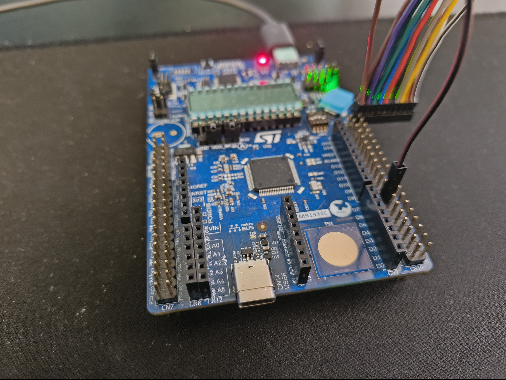
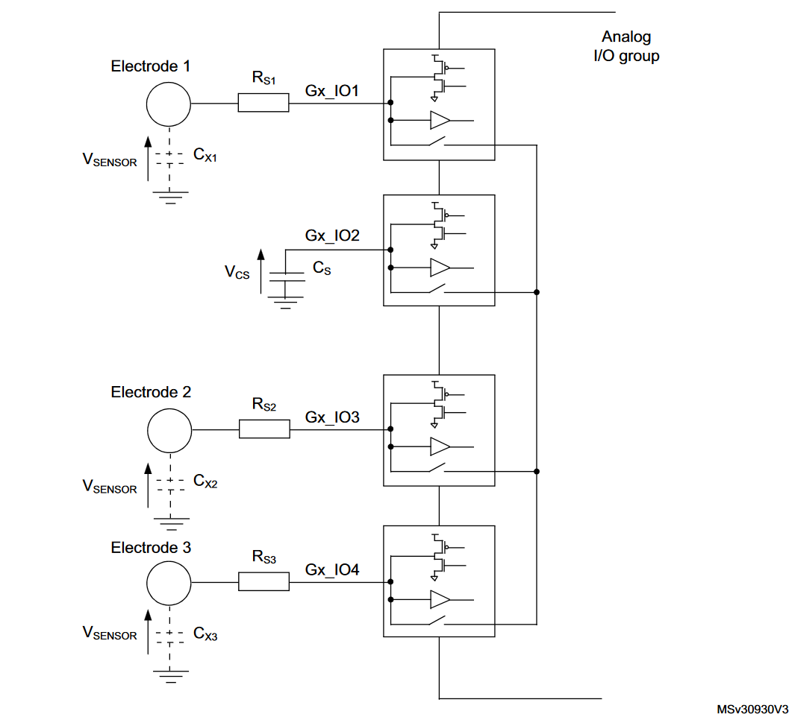
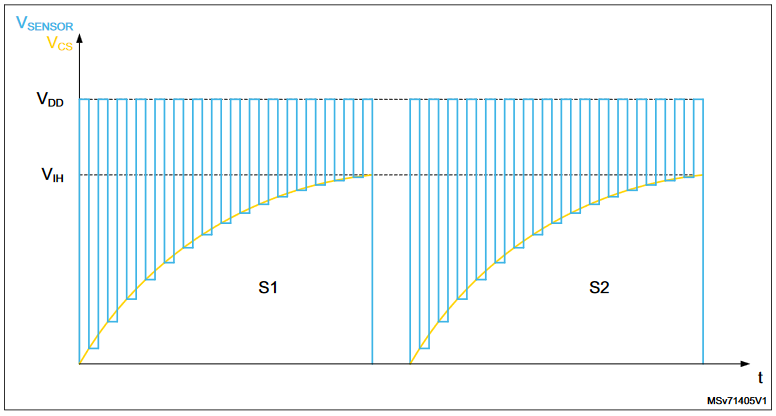
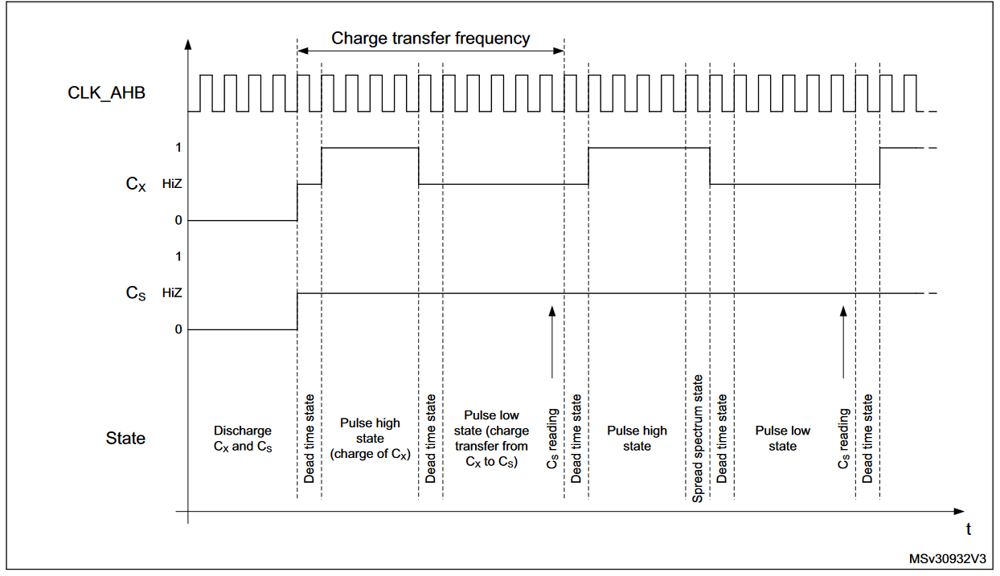
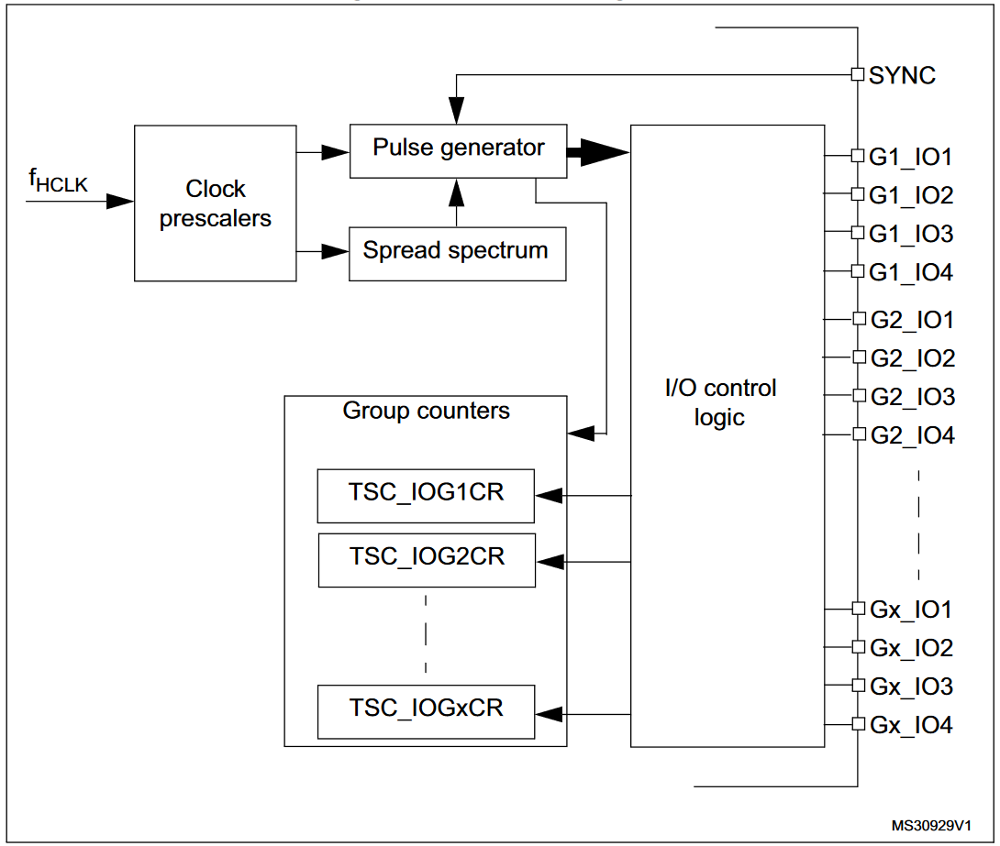
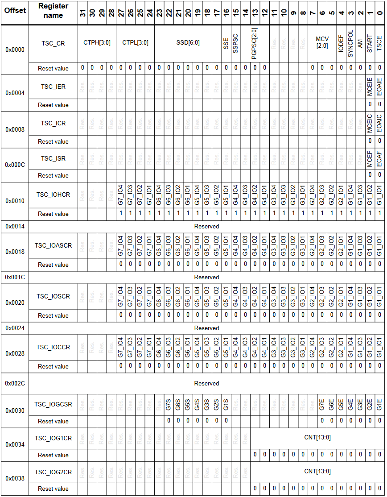
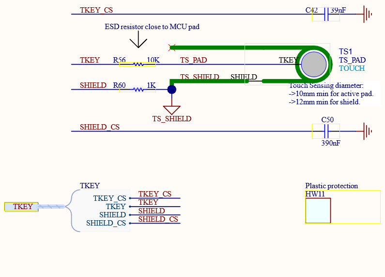

A Practical Guide to Zephyr Device Driver Development
This is a guide on how to write a production grade device driver in Zephyr. This includes driver code, testing, CI and many more. Do not consider this document as a tutorial to Zephyr or device drivers, I'll just showcase my workflow and the environment I use to develop device drivers in Zephyr. Some of this may not be suited for your workflow, but I'll try to keep each section on it's own so you can skip the parts you don't need or don't want to use.
I'll not talk about some details and assume you have at least heard about Zephyr and device drivers. If you don't, or want to refresh your memory check out the official documentation. More of the talk will assume you were already developing on embedded projects and want to try something new, or you are already developing on Zephyr and want to see how others do it.
Note
Zephyr still makes big changes to the framework, so some of the information here might be outdated or not the best practice anymore. I'll try to keep this up to date as much as possible, and give version information anywhere I can. Also I'll run inside a development container for you readers to easily follow along.
Introduction
I've known about Zephyr for a while now but only had the chance to work with it by the beginning of this year when I listened the this Amp Hour podcast. I've quickly come to realize the enormous benefits of using Zephyr for any kind of embedded project. From full blown RTOS running on x86 with network stacks and PCIe drivers to a microcontroller with 32KB of flash, Zephyr is a great choice for any project. It was surreal to edit devicetree files to configure a 50-cent microcontroller.
Zephyr gives you a nice framework for everything embedded. You have device trees, device drivers, networking stacks, filesystems, a testing framework, a nice RTOS, a nice build system and anything else you can name. It abstracts low level hardware so nicely that you only need to write what your application ultimately wants to do in a hardware-agnostic way and have it run on anything without touching a single line of code.
I especially liked the Zephyr because I was working on a range of similar products with an unorganized and distributed codebase, we needed to run our business logic on slightly different hardware platforms, so the device driver model and device trees was the perfect solution in this case. We initially got concerned about the size of the firmware as we were on very tight budget, we could only get 32KB and 64KB flash microcontrollers, and Zephyr seemed overkill for this, but it was not. It seems like the Zephyr team has a lot of experience in the embedded world and Linux in general, so they've made the right choice of making the entire thing customizable down to the detail. If you strip down everything you can get down to a ~3KB binary, which is amazing. But most of the time you want to use OS services and other features so you end up with a ~7KB-10KB binary for a minimal application.
Most of the drivers are already in the Zephyr upstream, but you eventually have to write your own device drivers for your custom hardware. That's what I ended up doing, writing some device drivers, generating my custom board configurations and device trees, and wrote my application logic, and here I'll show you how I did it.
Prerequisites and Setup
First of all we need an environment to work in. In this environment we'll have all the tools we need to develop, test and debug our device driver. I usually prefer working in docker containers for reproducibility and ease of deployment. Therefore you need some tools installed in your host to get started.
- Docker (v26.0.0)
- VSCode (v1.92.0)
- Remote - Containers extension for VSCode (v0.389.0)
Note
I'm running on a x86 Windows machine, so I can use things like USBIP to debug my hardware connected to my host but this feature is not yet available in macOS, but we will also discuss about remote debugging in later sections.
I assume most of you already have those installed, so lets quickly get started.
Setup
If you are using VSCode, you can use devcontainers feature to get your development environment up and running in no time. But you can also use any other editor or a terminal to do everything I'll show you here.
If you want to work on your host machine, you can check out the official Zephyr documentation to setup your environment.
The development container is based on official zephyr-build container in Zephyr's docker-image repository. I've added extra configurations to really integrate it into VSCode with extensions and tools. But basically it has:
- Zephyr SDK (0.16.8)
- All the system packages needed for Zephyr
- Python3 and pip packages (including west)
- Oh My Zsh
- VSCode Extensions
Check out the devcontainer.json if you want to see the exact setup. To keep it compatible with non-vscode users, I kept the configuration minimal. I highly encourage you to modify the file to your needs. There are tons of customizations you can do with devcontainers.
Using the container
The fastest way to start is to pull and run the image I prepared from my GitHub Container Registry with the following command:
This should drop you into a shell with the Zephyr SDK and all the tools installed.
VSCode Remote Containers
Easiest method to work in a container is to use the Remote - Containers extension in VSCode. You can open the project folder in VSCode and click on the blue icon in the bottom left corner or with ctrl + shift + p and select Attach to Running Container... and select the container you just started.
Building the container (optional)
The building requires additional tools like node, npm and devcontainers package:
First install the package;
Then build the container with the following command:
Getting Started
Now that we have a system we can build on. We'll use the west tool to get the zephyr repository and start implementing.
West Workspaces
Assuming we want to contribute to the open-source project, we will develop inside the Zephyr source, so the T1 topology is what will be used here, but personally I use free standing application workspaces for professional work, T3 topology to be more specific.
Zephyr calls its workspaces west workspaces. And there are 3 main workspace types:
- Zephyr source as a workspace (T1)
- Zephyr application as a workspace (T2)
- Custom workspace with multiple Zephyr applications (you guessed it..)
More information on them can be found here.
Inside the container, we can start by initializing a workspace with the following command:
This will create a .west directory and clone zephyr repository into the /workdir which is mounted as volume and its persistent. What also is required is the Zephyr modules and tools, update the workspace with the following command:
This will fetch all source code that is outside of the Zephyr repository but needed to build an application, like the hal_stm32 and mcuboot repositories.
Warning
Zephyr version is v3.7.0 at the time of writing this document and it has a a bug that has been patched by me but is not in the v3.7.0, therefore if you want to be where I was when this document is written, check out to the 10fa1eab50ac54e41bf75ab0ad01daa4bd25ba13 hash of the zephyr repository, inside zephyr/west.yml file, or apply the patch yourself.
This may take some time and it will load a ton of modules we won't need, therefore I highly recommend using a T2 or T3 topology for your projects. Once the update is done, a similar file structure should appear in the workspace;
Device Driver Development

Recently I had my hands on a devkit for STMicroelectronic's U0 series microcontrollers, and one peripheral I was interested was the TSC peripheral in this MCU. This is a peripheral used for capacitive touch sensing applications, buttons, sliders and things like that can be implemented with this peripheral (Notice the touch surface in the bottom right corner, it is a bare electrode and a 1mm insulating surface on top) You can implement a touch sensing application by using a PWM and an ADC maybe with comparator but this peripheral is very simple and does all that and a little bit more and offloads the CPU.
Conveniently Zephyr does not have a driver for this peripheral. So I will write one here.
Understanding the Hardware
This section goes a little bit into the details of the hardware we are working with. If you are not interested in this part or you already know the terminology you can skip to the next section.
If you haven't worked with a capacitive touch sensing application before, allow me to tell you that it is not as easy as it seems when integrating touch sensing into a product end-to-end. Especially if you have stricter requirements for your application, like electrically noisy environments, or any industrial spec really immediately starts to complicate things and EMC becomes a big issue.
A capacitive touch point is usually just a piece of conductive material, like a PCB pad. This piece of pad is leveraged to create a capacitive coupling with the human body, so you have to make a sandwich of these two conductive surfaces, (often a plastic is always in between the finger and the plate) forming a capacitor.
Then this means we can charge the capacitor and do funky things with it, for example we can say that the capacitance changes when a finger is present than when it is not, and this can be used to detect a touch.
Of course this is just one very specific setup with a single ended electrode, there are many setups and ways to do this, what we will specifically talk here is called Surface Charge Transfer (SCT) method, which is what this peripheral does.
Surface Charge Transfer

The dotted capacitor in the figure above represents the capacitor of the electrode we just made with a finder and a conductive patch with an insulating layer in between.
This method does not continuously check the voltage of this electrode, instead an external capacitor (in ranges from 1pf to couple hundreds of pf) called sampling capactior is used to transfer some charge in the electrode to this new capacitor (Cs in the figure above), this makes the readings much more repeatable and reliable.
ST TSC in particular calls this combo a group and gives each group two extra channels for more custom applications. Each group has to have 1 sampling capacitor channel and at least one IO channel to function properly. These IO channels do not produce a value each, instead each channel is used to charge the same sampling capacitor, so a group will produce only one count value no matter the IO channel count. ST gives the example of a crude proximity sensor by placing two or more electrodes near each other.

This charge transfer duration is pretty small (and of course programmable), so it does not fill the sampling capacitor right away, the peripheral needs to perform many of these charge transfer cycles and count it. Counting is stopped when this count reaches a certain threshold, which the peripheral then throws a max count error interrupt, or the voltage on this charged sample capacitor is reached a voltage level (again, programmable) before the max count is reached, peripheral then throws an end of acquisition interrupt which than you can read and find out how many cycles it took to reach this voltage level. And this will directly be correlated to the capacitance of the electrode, which is directly correlated to the presence of a finger.

As I mentioned above touch sensing get really messy in noisy environments, so running these cycles and very fast at a fixed interval would not be very wise because the signal would pick up harmonics of the noise and you would get false positives and whatnot. Therefore the peripheral has a feature called spread spectrum which adds variation to charge transfer cycles.
This is a very smart and robust way of detecting a touch. Above you can see the full cycle. I got this image and most of all information about this hardware from the reference manual RM0503 of the STM32U0 series microcontrollers.
Registers and Configurations
After we understand the Surface Charge Transfer method we can start to see what can we configure. Functional diagrams is a good way to start.

We can see that we have two different sections which can be clocked at different speeds, one is for generating the charge pulses and other is for spread spectrum which generates a value that feeds into the pulse generator. Something we did not talked about yet is SYNC signal, which is an external signal which triggers pulse generator to start acquisition in addition to the software trigger the driver will use.
Pulse generator commands the IO, setting their modes and function while the acquisition is running and it will store the group results in separate 14-bit values in IOGXCR (IO Group X Counter Register).
Reset and Clock Configuration
This is a memory mapped peripheral like most all peripherals in STM32 microcontrollers. And often the first thing to do is to reset the peripheral (optional) and enable it. For STM32 MCU's the RCC (Reset and Clock Controller) peripheral is able to do this, so first peripheral to work with is the RCC.
The TSC peripheral gets it's clock from the AHB clock, we expect this clock to be initialized by other drivers, what this driver has to do is to set some bits to perform reset and enable operations. Reference manual gives all the information we would need.
RCC AHBRSTR (RCC AHB Reset Register Bits 24)
| Bit | 31:25 | 24 | 23:0 |
|---|---|---|---|
| Name | - | TSCRST | - |
| Desc. | - | Touch sensing controller reset | - |
| Values | - | 0: No effect1: Reset TSC |
- |
RCC AHBENR (RCC AHB Enable Register Bits 24)
| Bit | 31:25 | 24 | 23:0 |
|---|---|---|---|
| Name | - | TSCEN | - |
| Desc. | - | Touch sensing controller clock enable | - |
| Values | - | 0: TSC clock disabled1: TSC clock enabled |
- |
As you can see ST conveniently named the registers and put the relevant bits in the same position for both registers (24th bit). So this means whenever we write 1 to the 24th bit of the RCC register base address + register_offset (0x28 for reset and 0x48 for enable) we can reset and enable the peripheral.
GPIO Configuration
This is the second peripheral before we get to the TSC peripheral. The pins we will use for the TSC should be configured through the GPIO peripheral. Thankfully Zephyr provides a good subsystem and abstraction for this which we will see later.
There is also some registers in the TSC peripheral that we need to configure. First of all we have to specify which channels are used for what, and which groups are enabled. We will use different registers for each of these settings.
When no acquisition is ongoing, the state of the IO channels are in default mode. And TSC peripheral offers an option to set the default mode of the IO channels. This can be floating, push-pull-low. The register for this is CR (Control Register) and the bit position is 4;
TSC CR (TSC Control Register Bit 4)
| Bit | 31:5 | 4 | 3:0 |
|---|---|---|---|
| Name | - | IODEF | - |
| Desc. | - | IO default mode | - |
| Values | - | 0: Push-pull-low1: Floating |
- |
We use IOCCR (IO Channel Control Register) and IOSCR (IO Sampling Control Register) registers for electrodes and sampling capacitors respectively.
TSC IOCCR (TSC IO Channel Control Register)
| Bit | 31:28 | 27:0 |
|---|---|---|
| Name | - | Gx_IOy |
| Desc. | - | IO channel y of group x |
| Values | - | 0: Disabled1: IO used as channel mode |
TSC IOSCR (TSC IO Sampling Control Register)
| Bit | 31:28 | 27:0 |
|---|---|---|
| Name | - | Gx_IOy |
| Desc. | - | IO channel y of group x |
| Values | - | 0: Disabled1: IO sampling mode |
And finally IOGCSR (IO Group Control Status Register) to enable the group.
TSC IOGCSR (TSC IO Group Control Status Register)
| Bit | 31:7 | 6:0 |
|---|---|---|
| Name | - | GxS |
| Desc. | - | Analog I/O group x enable |
| Values | - | 0: Disabled1: Enabled |
TSC Clock Prescaler Configuration
The clock enters the TSC IP from the AHB clock, this clock goes to many other peripherals so it is not a good idea to change the AHB clock rate for the TSC peripheral as the first and only thing. Instead we have a clock pre-scaler value to divide clock further before it enters the TSC. User manuals tells us the location of this register that controls this.
TSC CR (TSC Control Register Bits 15 and 14:12)
| Bit | 15 | 14:12 | |||||||||||
|---|---|---|---|---|---|---|---|---|---|---|---|---|---|
| Name | SSPSC | PGPSC[2:0] | |||||||||||
| Desc. | Spread spectrum prescaler | Pulse generator prescaler | |||||||||||
| Values | 0: fHCLK1: fHCLK /2 |
000: fHCLK... 111: fHCLK /128 |
There are two clock settings
PGPSC(Pulse Generator Prescaler) and it is a 3-bit value, and each represents a different division factor.adjust the clock rate for the TSC peripheral.SSPSC(Spread Spectrum Prescaler) and it is a 1-bit value.0: AHB/1and1: AHB/2.
Defining the clock finally gives us the full cycle duration for one charge transfer cycle. In U0 series this can be from 500ns to 2us.
TSC Pulse Generator Configuration
This section is the heart of the peripheral configuration and there are a few settings we can adjust;
- Charging duration
- Transfer Duration
- Max Cycle Count
TSC CR (TSC Control Register Bits 31:28, 27:24 and 7:5)
| Bit | 31:28 | 27:24 | 7:5 | ||||||||||
|---|---|---|---|---|---|---|---|---|---|---|---|---|---|
| Name | CTPH[3:0] | CTPL[3:0] | MCV[2:0] | ||||||||||
| Desc. | Charge transfer pulse high | Charge transfer pulse low | Max count value | ||||||||||
| Values | 0000: 1x tPGCLK...1111: 16x tPGCLK |
0000: 1x tPGCLK...1111: 16x tPGCLK |
000: 255001: 511...110: 16383 |
Charging and transfer durations are denoted as CTPH (Charge Transfer Pulse High) and CTPL (Charge Transfer Pulse Low) respectively. These are 4-bit values and can be adjusted from 1 to 16 clock cycles. These values are used to charge the external capacitor and transfer the charge to the sample capacitor.
Max cycle count is a 3-bit value and each represents a different count value. This is a safety feature where TSC can not fill the capacitor enough to reach the voltage threshold, so it stops the cycle and throws an interrupt.
TSC Spread Spectrum Configuration
TSC CR (TSC Control Register Bits 23:17 and 16)
| Bit | 23:17 | 16 | |||||||||||
|---|---|---|---|---|---|---|---|---|---|---|---|---|---|
| Name | SSD[6:0] | SSE | |||||||||||
| Desc. | Spread spectrum deviation | Spread spectrum enable | |||||||||||
| Values | 0000000: 1x tSSCLK...1111111: 128x tSSCLK |
0: Disabled1: Enabled |
Spread spectrum has 9-bits for configuration in the CR register. The pre-scaler bit is already set, so rest if a 1-bit enable and 7-bit deviation value.The deviation value represents the maximum deviation of the charge transfer pulse in spread spectrum clock cycles.
TSC SYNC Configuration
There are only two bits related to this setting, one is for selecting the polarity and the other is for enabling the SYNC signal.
TSC CR (TSC Control Register Bits 4 and 3)
| Bit | 3 | 2 | |||||||||||
|---|---|---|---|---|---|---|---|---|---|---|---|---|---|
| Name | SYNCPOL | SYNC Enable | |||||||||||
| Desc. | Synchronization pin polarity | Synchronization enable | |||||||||||
| Values | 0: Falling edge only1: Rising edge and high level |
0: Disabled1: Enabled |
TSC Interrupts
There are only 2 interrupts, EOAF (End of Acquisition Flag) and MCEF (Max Count Error Flag). These are set when the voltage threshold is reached or the max cycle count is reached respectively. They are enabled through a different register called IER (Interrupt Enable Register).
TSC IER (TSC Interrupt Enable Register Bits 1 and 0)
| Bit | 31:2 | 1 | 0 |
|---|---|---|---|
| Name | - | MCEIE | EOAIE |
| Desc. | - | Max count error interrupt enable | End of acquisition interrupt enable |
| Values | - | 0: Disabled1: Enabled |
0: Disabled1: Enabled |
Note
There is also a setting to adjust the voltage threshold for the end of acquisition, but this is done using a different comparator peripheral, for the sake of simplicity we will not use this feature.
How to Read the Count Value
Before we start reading the START bit in the CR register should be set to start the acquisition. After the acquisition is done, the peripheral will throw an interrupt or we can poll the EOAF bit in the ISR register to check if the acquisition is done. Then we can read the status of each group with IOGSR and see if that group has finished the acquisition. If it has we can read the count value from the IOGXCR register.
TSC CR (TSC Control Register Bits 0)
| Bit | 31:1 | 0 |
|---|---|---|
| Name | - | START |
| Desc. | - | Start acquisition |
| Values | - | 0: No effect1: Start acquisition |
TSC ISR (TSC Interrupt Status Register Bits 1 and 0)
| Bit | 31:2 | 1 | 0 |
|---|---|---|---|
| Name | - | MCEF | EOAF |
| Desc. | - | Max count error flag | End of acquisition flag |
| Values | - | 0: No error1: Error |
0: No end of acquisition1: End of acquisition |
TSC IOGCSR (TSC IO Group Control Status Register)
| 31:23 | 22:16 | 15:0 | |
|---|---|---|---|
| Name | - | GxS | - |
| Desc. | - | Analog I/O group x status | - |
| Values | - | 0: Ongoing1: Complete |
- |
TSC IOGXCR (TSC IO Group X Counter Register)
| Bit | 31:14 | 13:0 |
|---|---|---|
| Name | - | CT[13:0] |
| Desc. | - | Counter value |
There are some other minor settings which I will not go into detail because it does not concern the driver implementation. But here is the complete map of the TSC peripheral registers.
STM32U0 TSC Peripheral Registers

Hardware Configuration

The development kit schematic shows the implementation is for one electrode (TKEY) and one sampling capacitor (TKEY_CS), so we will stick with that.
Notice how they actually used an extra group for another electrode and called it shield and connected to the end of the electrode to the ground. This is a trick often used to further reduce EMI and noise. Only difference this has over an electrode is this is not selected for acqusition. This is not related to the driver implementation so I will not go into detail.
The pins and their alternate functions are as follows:
| GPIO Pin | GPIO Alternate Function | TSC Group | TSC IO Number | Function |
|---|---|---|---|---|
| PD10 | AF9 | 6 | 1 | TKey CS |
| PD11 | AF9 | 6 | 2 | TKey |
| PB12 | AF9 | 1 | 1 | Shield Electrode |
| PB13 | AF9 | 1 | 2 | Shield Electrode Sampling Capacitor |
I talk more about this in the next section, but this is the hardware we will work with.
Device Tree Nodes and Bindings
One of the first things to do is to create a device tree binding to describe our hardware before the implementation starts. The concept of device trees are not new and is used in Linux for many years, so it may be familiar to some of you, but for those who are unfamiliar, it is a JSON-like file that describes a hardware node in a system called device-tree, this allows for decoupling the hardware from the source code so that software may run independent of the hardware it is running on, meaning the API won't change if you change the hardware.
To know more about device trees check out the official documentation.
To sketch a design lets thinker about a node for the hardware above. This is an attempt to create a definition that will contain all hardware related information in a single node for this peripheral.
tsc : tsc@40024000 {
compatible = "st,stm32-tsc";
reg = <0x40024000 0x400>;
clocks = <&rcc STM32_CLOCK_BUS_AHB1 0x01000000>;
resets = <&rctl STM32_RESET(AHB1, 24U)>;
interrupts = <21 0>;
};
This simple node seems pretty self-explanatory, it has the most generic properties common to almost all ST -or ARM really- compatible peripherals, a register space, clock, reset and interrupt. The node describes a TSC node with the label tsc and at the address 0x40024000 which corresponds to the beginning of address space of the TSC module in STM32U0x series microcontrollers, this is the most fundamental information we should have about a memory-mapped io. We can see this information is encoded twice (both in definition with @ symbol and with reg property). We can also see the entire memory mapped region is 1KB (0x400), it's clock is connected to the AHB1 (24th bit 0x01000000 of the AHB control register), also it has a reset line again at the bit position 24 in the corresponding reset controller control register (created with STM32_RESET macro). In the vector table the position offset of its interrupt is 21 and has 0 priority. Another very important property is the compatible property, this is a string that describes the driver that will handle this node, in other words, this node information will be passed to a driver that declares itself as st,stm32-tsc compatible. Very neat!
A node binding is any property of a node, described in a file, a yaml file in our case, so to make our st,stm32-tsc node work we need to create a binding file for it, so that we can enforce out properties and rules about those properties. And there are strict rules to follow about the location of these files and the naming conventions. The binding files must be in the dts/bindings directory of workspace or application root, board directories or in modules. We will create our own in the workspace root.
The naming convention for the binding files are usually vendor,driver.yaml (vendor is optional for generic drivers) and usually they reside in subfolders for better organization. So we will create ours in misc folder and put the binding there.
And create the st,stm32-tsc.yaml file with the following content:
# zephyr/dts/bindings/misc/st,stm32-tsc.yaml
description: STM32 Tocuh Sensing Controller (TSC) driver
compatible: "st,stm32-tsc"
include: [base.yaml, reset-device.yaml]
properties:
reg:
required: true
clocks:
required: true
resets:
required: true
interrupts:
required: true
as you can tell from the file, all the properties are included from other files Zephyr provides for us, this file only makes some of them required. Their definition can be seen in one of these included files; base.yaml
# zephyr/dts/bindings/base/base.yaml
properties:
compatible:
type: string-array
required: true
description: compatible strings
reg:
type: array
description: register space
interrupts:
type: array
description: interrupts for device
...
This binding file will make sure we have the properties we need, and they are parsed correctly for the relevant hardware node with the matching compatible property.
Again these documents are quite verbose and easy to read and maintain, so that's good. They can also get pretty messy if you don't do it right, so please follow the official documentation for more information.
Of course up to this point we only included and set up bindings for the information to enable the peripheral (reg, clocks, resets and interrupts), but we also have to configure it, which requires additional bindings. We went into detail in the section Understanding the Hardware so I will not go into detail here, but basically we will need the following information to set up a TSC peripheral:
- IO pins for the electrodes and sampling capacitors
- Pulse generator prescaler value
- Spread spectrum prescaler, deviation and enable
- Charge transfer pulse high and low values
- Max count value
- SYNC signal polarity and enable
Pin Control
We discussed how configuring the physical pins is a job of another peripheral, pintcrl-device.yaml provides some bindings to allow generic nodes to provide pin configuration information. It is called pinctrl-X where X is the number of the pin group. Take a look at the property;
# zephyr/dts/bindings/pinctrl-device.yaml
pinctrl-0:
type: phandles
description: |
Pin configuration/s for the first state. Content is specific to the
selected pin controller driver implementation.
...
pinctrl-x:
type: phandles
description: |
Pin configuration/s for the x-th state. Content is specific to the
selected pin controller driver implementation.
pinctrl-names:
type: string-array
description: |
Names for the provided states. The number of names needs to match the
number of states.
A pin configuration can change based on whether the device is running or in sleep mode to preserve power. So we can have multiple states for the pin configuration, separated by the pinctrl-names property. It usually is default and sleep but can be anything. The phandles property is just a reference to another node, so we can point to other nodes which will include the pin information, defined somewhere else.
To have this binding required in our st,stm32-tsc.yaml file we just need to add the following lines:
The use of this binding in the driver implementation will be discussed in the next sections. But the following snippet can give you a glimpse of how it can be used in a device tree node.;
&node {
pinctrl-0 = <&pin_d12_af9>;
pinctrl-names = "default";
};
&pinctrl {
pin_d12_af9: pinconfig1 {
pinmux = <STM32_PINMUX('D', 12, AF9)>;
drive-open-drain;
};
};
The & symbol works very similar to a pointer in C, in this example we are referencing already existing nodes (through labels; node-label: node-name) and altering them (node and pinctrl) in the device tree. STM32_PINMUX is just a C macro and literally coming from an included header file. We can supply the pin, its function and additional properties like push-pull or open-drain. And passing the definition of these pinctrl nodes to the node node will make sure the pins are configured correctly when the driver is loaded.
So based on this let's define the pins and their functions for this development kit. Schematic tells us there is two pins used in this board, one is a shield electrode and the other is the touch electrode itself, of course each with their own sampling capacitor pins. 4 in total. These pins are also belong to a group, ST choose group 1 and group 6 for these pins and they nicely provide a table for the pins in the UM3292 user manual. I also talked about them in the Hardware Configuration section.
Also In the reference manual we can get the information about which alternate function is used for the TSC group configuration for that specific pin, conveniently all of them are AF9 for these pins. So we can define them in the device tree as follows;
&pinctrl {
tsc_shield_pb12: tsc_shield_pb12 {
pinmux = <STM32_PINMUX('D', 12, AF9)>;
drive-open-drain;
};
tsc_shield_cs_pb13: tsc_shield_cs_pb13 {
pinmux = <STM32_PINMUX('D', 13, AF9)>;
};
tsc_g6_io1_pd10: tsc_g6_io1_pd10 {
pinmux = <STM32_PINMUX('D', 10, AF9)>; // TKey CS pin
drive-open-drain;
};
tsc_g6_io2_pd11: tsc_g6_io2_pd11 {
pinmux = <STM32_PINMUX('D', 11, AF9)>; // TKey Pin
};
};
And later we will provide these pins to the TSC node in the device tree;
&tsc {
pinctrl-0 = <&tsc_shield_pb12 &tsc_shield_cs_pb13 &tsc_g6_io1_pd10 &tsc_g6_io2_pd11>;
pinctrl-names = "default";
};
and use this information to set up the GPIO pins in the driver implementation.
It is important to define these pins inside the pinctrl parent node so we can use the bindings like drive-open-drain and pinmux in the child nodes. This node is provided by your vendor in the soc device tree file, this file and many other will be included in the final device tree file, so many overlays can be used to configure the hardware, SOC DTS files > Board DTS files > Application DTS files > Final DTS file.
Other Bindings
Now we only deal with bindings with basic types, like int, enum, string and boolean.
Pulse Generator Prescaler
The pulse generator prescaler is a 3-bit value as discussed in the Registers and Configurations section, so it can be defined as an enum in the binding file.
pulse-generator-prescaler:
type: int
default: 2
description: |
Prescaler for the pulse generator clock (t_pgclk=f_hclk/prescaler).
The prescaler is used to generate the charge transfer pulse.
0: f_hclk/1
1: f_hclk/2
2: f_hclk/4
3: f_hclk/8
4: f_hclk/16
5: f_hclk/32
6: f_hclk/64
7: f_hclk/128
enum: [0, 1, 2, 3, 4, 5, 6, 7]
Charge Transfer Pulse High and Low
These are 4-bit values, this too can be defined as integer enum.
ctph:
type: int
default: 2
description: |
Number of cycles for the high state of the
charge transfer pulse (1 to 16 cycles of t_pgclk).
enum: [1, 2, 3, 4, 5, 6, 7, 8, 9, 10, 11, 12, 13, 14, 15, 16]
ctpl:
type: int
default: 2
description: |
Number of cycles for the low state of the
charge transfer pulse (1 to 16 cycles of t_pgclk).
enum: [1, 2, 3, 4, 5, 6, 7, 8, 9, 10, 11, 12, 13, 14, 15, 16]
Max Count Value
This is a 3-bit value, we can define it as an integer enum.
max-count-value:
type: int
default: 5
description: |
Max number of charge transfer pulses before max count error is generated.
0: 255
1: 511
2: 1023
3: 2047
4: 4095
5: 8191
6: 16383
7: 32767
enum: [0, 1, 2, 3, 4, 5, 6, 7]
Spread Spectrum
The spread spectrum prescaler is a 1-bit value, it should be easy to define.
spread-spectrum-prescaler:
type: int
description: Spread spectrum clock prescaler (t_ssclk)
enum:
- 1
- 2
and to enable it we can define a boolean property.
These boolean properties are easy to use;
We also need to define the deviation value for the spread spectrum, it can have a value from 0 to 127. But for convenience we will start from 1 and offset it in the driver implementation.
spread-spectrum-deviation:
type: int
default: 1
description: Spread spectrum deviation (1 to 128 cycles of t_ssclk)
SYNC Signal
We have two properties for the SYNC signal, one is for the polarity and the other is for the enable.
synced-acquisition:
type: boolean
description: |
Synchronized acquisition enable. Acquisition starts when START bit and signal on sync pin.
You have to provide a pinctrl for the sync pin.
syncpol-rising:
type: boolean
description: Rising synchronization pin polarity, instead of falling
I choose to use a boolean property for the polarity it could also be a string enum, but I think this is more readable.
IO Default Mode
IO mode is 1-bit value, it can be either floating or driven low (default).
iodef-float:
type: boolean
description: |
I/Os are floating when not used for acquisition.
If not set, I/Os are driven low.
Child Nodes and Bindings
We talked about the group logic in the Understanding the Hardware section. Once we enable the TSC peripheral, we should also enable groups and channels within those groups for acquisition. Device tree offers a way to describe these as child nodes of the TSC node. Lets say we can define a group node as follows;
&tsc {
group1 {
group = <1>;
use-as-shield;****
channel-ios = <2>;
sampling-io = <1>;
};
group6 {
group = <6>;
channel-ios = <2>;
sampling-io = <1>;
};
};
So this nodes inside the tsc node are called child nodes, and in our case they give us information about the group index, channel and sampling io pin bits and one more property to use the group as shield (basically configure the group but do not acquire a value from it). We can define these nodes in the binding file as follows;
# zephyr/dts/bindings/misc/st,stm32-tsc.yaml
properties:
...
child-binding:
description: STM32 TSC group configuration
properties:
group:
type: int
required: true
description: Group number (0 to 7)
enum: [0, 1, 2, 3, 4, 5, 6, 7]
channel-ios:
type: int
description: Channel I/Os to be enabled
enum: [1, 2, 3, 4, 5, 6, 7, 8, 9, 10, 11, 12, 13, 14, 15, 16]
sampling-io:
type: int
required: true
description: Channel to be selected for sampling
enum: [1, 2, 4, 8]
use-as-shield:
type: boolean
description: |
Use channel as shield. This configures group but
does not enable it for acqusition. channel-io is used
as shield pin and can only have values 1, 2, 4 or 8.
This information unfortunately can not be extracted from the pin information, so child nodes like these are required to configure and acquire data from the TSC peripheral.
Final Binding File and Device Tree Nodes
For the device tree, we will have two definitions in two different files. The first definition is the core information about the peripheral, and is the same for all U0 series microcontrollers. Therefore it has to be inside the main stm32u0.dtsi file which all stm32u0 based boards include (device tree files can be nested and included in each other).
This file already exists in upstream Zephyr, under dts/arm/st/u0/stm32u0.dtsi, we just need to modify it.
# zephyr/dts/arm/st/u0/stm32u0.dtsi
soc {
tsc: tsc@40024000 {
compatible = "st,stm32-tsc";
reg = <0x40024000 0x400>;
clocks = <&rcc STM32_CLOCK_BUS_AHB1 0x01000000>;
resets = <&rctl STM32_RESET(AHB1, 24U)>;
interrupts = <21 0>;
interrupt-names = "global";
status = "disabled";
};
};
We define the node and let it be disabled by default so our driver wont be compiled into the application until status is set to okay.
The second definition is in the development kit specific file, stm32u083c-dk.dts in our case, this file again is defined in the upstream Zephyr, under boards/st/stm32u083c_dk/stm32u083c_dk.dts. This file will contain the information about the pins and the groups we will use in the TSC peripheral along with the pin configuration.
Note
You can also define these in the device tree overlay file in your application, and avoid modifying files inside Zephyr source, but since we already have a demo board definition we will use that.
If you want to use an overlay it would look something like this;
include "...";
&soc {
tsc: tsc@40024000 {
status = "okay";
clocks = <&rcc STM32_CLOCK_BUS_AHB1 0x01000000>;
resets = <&rctl STM32_RESET(AHB1, 24U)>;
interrupts = <21 0>;
pinctrl-0 = <&tsc_shield_pb12 &tsc_shield_cs_pb13 &tsc_g6_io1_pd10 &tsc_g6_io2_pd11>;
pinctrl-names = "default";
spread-spectrum;
spread-spectrum-prescaler = <2>;
spread-spectrum-deviation = <100>;
g1 {
group = <1>;
use-as-shield;
channel-ios = <2>;
sampling-io = <1>;
};
g6 {
group = <6>;
channel-ios = <2>;
sampling-io = <1>;
};
};
};
&pinctrl {
tsc_shield_pb12: tsc_shield_pb12 {
pinmux = <STM32_PINMUX('D', 12, AF9)>;
drive-open-drain;
};
tsc_shield_cs_pb13: tsc_shield_cs_pb13 {
pinmux = <STM32_PINMUX('D', 13, AF9)>;
};
tsc_g6_io1_pd10: tsc_g6_io1_pd10 {
pinmux = <STM32_PINMUX('D', 10, AF9)>; // TKey CS pin
drive-open-drain;
};
tsc_g6_io2_pd11: tsc_g6_io2_pd11 {
pinmux = <STM32_PINMUX('D', 11, AF9)>; // TKey Pin
};
};
# zephyr/boards/st/stm32u083c_dk/stm32u083c_dk.dts
#include <zephyr/dt-bindings/misc/stm32-tsc-defines.h>
&tsc {
status = "disabled";
pinctrl-0 = <&tsc_shield_pb12 &tsc_shield_cs_pb13 &tsc_g6_io1_pd10 &tsc_g6_io2_pd11>;
pinctrl-names = "default";
spread-spectrum;
spread-spectrum-prescaler = <2>;
spread-spectrum-deviation = <100>;
g1 {
group = <1>;
use-as-shield;
channel-ios = <2>;
sampling-io = <1>;
};
g6 {
group = <6>;
channel-ios = <2>;
sampling-io = <1>;
};
};
&pinctrl {
tsc_shield_pb12: tsc_shield_pb12 {
pinmux = <STM32_PINMUX('D', 12, AF9)>;
drive-open-drain;
};
tsc_shield_cs_pb13: tsc_shield_cs_pb13 {
pinmux = <STM32_PINMUX('D', 13, AF9)>;
};
tsc_g6_io1_pd10: tsc_g6_io1_pd10 {
pinmux = <STM32_PINMUX('D', 10, AF9)>; // TKey CS pin
drive-open-drain;
};
tsc_g6_io2_pd11: tsc_g6_io2_pd11 {
pinmux = <STM32_PINMUX('D', 11, AF9)>; // TKey Pin
};
};
The peripheral and the groups are defined as child nodes of the TSC node. Pins are supplied and spread spectrum feature is enabled and configured. The status property is set to disabled by default, users will be able to enable this in application overlay file.
Notice how this information could only be given in the development kit specific file instead of the soc definition, because the pins are different in every board. And other bindings are also application specific.
When device tree compiler compiles all the device tree files into one final device tree, we get the following node;
/ {
soc {
pinctrl {
...
tsc_shield_pb12: tsc_shield_pb12 {
pinmux = < 0x789 >;
drive-open-drain;
phandle = < 0x10 >;
};
tsc_shield_cs_pb13: tsc_shield_cs_pb13 {
pinmux = < 0x7a9 >;
phandle = < 0x11 >;
};
tsc_g6_io1_pd10: tsc_g6_io1_pd10 {
pinmux = < 0x749 >;
drive-open-drain;
phandle = < 0x12 >;
};
tsc_g6_io2_pd11: tsc_g6_io2_pd11 {
pinmux = < 0x769 >;
phandle = < 0x13 >;
};
};
tsc: tsc@40024000 {
compatible = "st,stm32-tsc";
reg = < 0x40024000 0x400 >;
clocks = < &rcc 0x48 0x1000000 >;
resets = < &rctl 0x518 >;
interrupts = < 0x15 0x0 >;
status = "disabled";
pinctrl-0 = < &tsc_shield_pb12 &tsc_shield_cs_pb13 &tsc_g6_io1_pd10 &tsc_g6_io2_pd11 >;
pinctrl-names = "default";
spread-spectrum;
spread-spectrum-prescaler = < 0x2 >;
spread-spectrum-deviation = < 0x64 >;
g1 {
group = < 0x1 >;
use-as-shield;
channel-ios = < 0x2 >;
sampling-io = < 0x1 >;
};
g6 {
group = < 0x6 >;
channel-ios = < 0x2 >;
sampling-io = < 0x1 >;
};
};
}
}
All files included and all macros expanded, this is the final device tree node that will be converted to a header file (instead of a binary blob used in Linux) containing all this information as C defines, so they will take up no space if not used. This generated header file can not be used directly as it is pretty verbose and hard to read;
// devicetree_generated.h
...
/*
* Devicetree node: /soc/tsc@40024000
*
* Node identifier: DT_N_S_soc_S_tsc_40024000
*
* Binding (compatible = st,stm32-tsc):
* /workdir/zephyr/dts/bindings/misc/st,stm32-tsc.yaml
*
* (Descriptions have moved to the Devicetree Bindings Index
* in the documentation.)
*/
/* Node's full path: */
#define DT_N_S_soc_S_tsc_40024000_PATH "/soc/tsc@40024000"
/* Node's name with unit-address: */
#define DT_N_S_soc_S_tsc_40024000_FULL_NAME "tsc@40024000"
/* Node parent (/soc) identifier: */
#define DT_N_S_soc_S_tsc_40024000_PARENT DT_N_S_soc
/* Macros for properties that are special in the specification: */
#define DT_N_S_soc_S_tsc_40024000_REG_NUM 1
#define DT_N_S_soc_S_tsc_40024000_REG_IDX_0_EXISTS 1
#define DT_N_S_soc_S_tsc_40024000_REG_IDX_0_VAL_ADDRESS 1073889280 /* 0x40024000 */
#define DT_N_S_soc_S_tsc_40024000_REG_IDX_0_VAL_SIZE 1024 /* 0x400 */
#define DT_N_S_soc_S_tsc_40024000_RANGES_NUM 0
#define DT_N_S_soc_S_tsc_40024000_FOREACH_RANGE(fn)
#define DT_N_S_soc_S_tsc_40024000_IRQ_NUM 1
#define DT_N_S_soc_S_tsc_40024000_IRQ_IDX_0_EXISTS 1
#define DT_N_S_soc_S_tsc_40024000_IRQ_IDX_0_VAL_irq 21
#define DT_N_S_soc_S_tsc_40024000_IRQ_IDX_0_VAL_irq_EXISTS 1
#define DT_N_S_soc_S_tsc_40024000_IRQ_IDX_0_EXISTS 1
#define DT_N_S_soc_S_tsc_40024000_IRQ_IDX_0_VAL_priority 0
#define DT_N_S_soc_S_tsc_40024000_IRQ_IDX_0_VAL_priority_EXISTS 1
#define DT_N_S_soc_S_tsc_40024000_IRQ_IDX_0_CONTROLLER DT_N_S_soc_S_interrupt_controller_e000e100
#define DT_N_S_soc_S_tsc_40024000_IRQ_LEVEL 1
#define DT_N_S_soc_S_tsc_40024000_IRQ_NAME_global_VAL_irq DT_N_S_soc_S_tsc_40024000_IRQ_IDX_0_VAL_irq
#define DT_N_S_soc_S_tsc_40024000_IRQ_NAME_global_VAL_irq_EXISTS 1
#define DT_N_S_soc_S_tsc_40024000_IRQ_NAME_global_VAL_priority DT_N_S_soc_S_tsc_40024000_IRQ_IDX_0_VAL_priority
#define DT_N_S_soc_S_tsc_40024000_IRQ_NAME_global_VAL_priority_EXISTS 1
#define DT_N_S_soc_S_tsc_40024000_IRQ_NAME_global_CONTROLLER DT_N_S_soc_S_tsc_40024000_IRQ_IDX_0_CONTROLLER
#define DT_N_S_soc_S_tsc_40024000_COMPAT_MATCHES_st_stm32_tsc 1
#define DT_N_S_soc_S_tsc_40024000_COMPAT_VENDOR_IDX_0_EXISTS 1
#define DT_N_S_soc_S_tsc_40024000_COMPAT_VENDOR_IDX_0 "STMicroelectronics"
#define DT_N_S_soc_S_tsc_40024000_COMPAT_MODEL_IDX_0_EXISTS 1
#define DT_N_S_soc_S_tsc_40024000_COMPAT_MODEL_IDX_0 "stm32-tsc"
#define DT_N_S_soc_S_tsc_40024000_STATUS_okay 1
#define DT_N_S_soc_S_tsc_40024000_P_resets_LEN 1
#define DT_N_S_soc_S_tsc_40024000_P_resets_EXISTS 1
#define DT_N_S_soc_S_tsc_40024000_P_pulse_generator_prescaler 2
#define DT_N_S_soc_S_tsc_40024000_P_pulse_generator_prescaler_ENUM_IDX 2
#define DT_N_S_soc_S_tsc_40024000_P_pulse_generator_prescaler_ENUM_VAL_2_EXISTS 1
#define DT_N_S_soc_S_tsc_40024000_P_pulse_generator_prescaler_EXISTS 1
#define DT_N_S_soc_S_tsc_40024000_P_ctph 2
#define DT_N_S_soc_S_tsc_40024000_P_ctph_ENUM_IDX 1
#define DT_N_S_soc_S_tsc_40024000_P_ctph_ENUM_VAL_2_EXISTS 1
#define DT_N_S_soc_S_tsc_40024000_P_ctph_EXISTS 1
#define DT_N_S_soc_S_tsc_40024000_P_ctpl 2
#define DT_N_S_soc_S_tsc_40024000_P_ctpl_ENUM_IDX 1
#define DT_N_S_soc_S_tsc_40024000_P_ctpl_ENUM_VAL_2_EXISTS 1
#define DT_N_S_soc_S_tsc_40024000_P_ctpl_EXISTS 1
#define DT_N_S_soc_S_tsc_40024000_P_spread_spectrum 0
#define DT_N_S_soc_S_tsc_40024000_P_spread_spectrum_EXISTS 1
#define DT_N_S_soc_S_tsc_40024000_P_spread_spectrum_deviation 1
#define DT_N_S_soc_S_tsc_40024000_P_spread_spectrum_deviation_EXISTS 1
#define DT_N_S_soc_S_tsc_40024000_P_max_count_value 5
#define DT_N_S_soc_S_tsc_40024000_P_max_count_value_ENUM_IDX 5
#define DT_N_S_soc_S_tsc_40024000_P_max_count_value_ENUM_VAL_5_EXISTS 1
#define DT_N_S_soc_S_tsc_40024000_P_max_count_value_EXISTS 1
#define DT_N_S_soc_S_tsc_40024000_P_iodef_float 0
#define DT_N_S_soc_S_tsc_40024000_P_iodef_float_EXISTS 1
#define DT_N_S_soc_S_tsc_40024000_P_synced_acquisition 0
#define DT_N_S_soc_S_tsc_40024000_P_synced_acquisition_EXISTS 1
#define DT_N_S_soc_S_tsc_40024000_P_syncpol_rising 0
#define DT_N_S_soc_S_tsc_40024000_P_syncpol_rising_EXISTS 1
...
The values are not meant to be accessed directly by us, instead a macro library is used to get the values programmatically. In my opinion this part needs a rework because it is very hard to trace macros when something is not right and you want to debug, but I think Zephyr is already working on a revised solution.
An example of how to access these values can be seen below;
Plumbing Device Tree to Driver Code
We have a binding file that defines the information the driver would need to work with a general STM32 TSC peripheral, and we have a device tree node that describes a specific instance of this peripheral. Now we need to write a driver that will use this information to configure and use the peripheral. From now on the idea is that this hardware node can be inside any ARM Cortex-M based STM32 microcontroller, and we will be able to use the same driver for all of them. Also our code wont only run on a specific hardware node, but instead may work on any hardware node that has the same properties (same compatible property in the device tree), so multiple TSC hardware can be used in the same application even though ST has no MCU with such feature, it's best practice to write drivers this way in case ST releases a new MCU with multiple TSC peripherals.
We therefore need to store all these information in a struct inside our MCU, preferably in flash memory so it won't take up any RAM.
Device Tree Macros
Zephyr provides us with a set of macros to access the device tree properties in the generated header file. These are usually harder to debug when something goes wrong but it makes everything compile-time. To use it we need to include the API from zephyr/include/zephyr/devicetree.h.;
Register Base Address
The memory address is the first thing we care about. it will be a 32-bit pointer to the base address of the TSC peripheral and can be casted to a pointer to a struct that represents the TSC peripheral memory layout.
So TSC_BASE macro takes a node and calls Zephyr macro DT_INST_REG_ADDR to get the reg property of the node, which is the base address of the peripheral. This is a pointer to the memory mapped registers of the peripheral, we than cast it to a pointer to a struct that represents the TSC peripheral memory layout and we have the peripheral ready to use.
Note
Since we are using a multi-instance compatible driver, we use instances, therefore we use the macro DT_INST_REG_ADDR instead of DT_REG_ADDR which is used for single instance drivers. when using _INST macros we need to provide DT_DRV_COMPAT in the beggining of the driver source file later when we create the driver.
TSC_TypeDef is provided by ST and is defined as a simple struct;
typedef struct
{
volatile uint32_t CR; /*!< TSC control register, Address offset: 0x00 */
volatile uint32_t IER; /*!< TSC interrupt enable register, Address offset: 0x04 */
volatile uint32_t ICR; /*!< TSC interrupt clear register, Address offset: 0x08 */
volatile uint32_t ISR; /*!< TSC interrupt status register, Address offset: 0x0C */
volatile uint32_t IOHCR; /*!< TSC I/O hysteresis control register, Address offset: 0x10 */
uint32_t RESERVED1; /*!< Reserved, Address offset: 0x14 */
volatile uint32_t IOASCR; /*!< TSC I/O analog switch control register, Address offset: 0x18 */
uint32_t RESERVED2; /*!< Reserved, Address offset: 0x1C */
volatile uint32_t IOSCR; /*!< TSC I/O sampling control register, Address offset: 0x20 */
uint32_t RESERVED3; /*!< Reserved, Address offset: 0x24 */
volatile uint32_t IOCCR; /*!< TSC I/O channel control register, Address offset: 0x28 */
uint32_t RESERVED4; /*!< Reserved, Address offset: 0x2C */
volatile uint32_t IOGCSR; /*!< TSC I/O group control status register, Address offset: 0x30 */
volatile uint32_t IOGXCR[8]; /*!< TSC I/O group x counter register, Address offset: 0x34-50 */
} TSC_TypeDef;
Pretty simple and efficient so far. This macro will expand into a simple pointer to the memory mapped registers of the TSC peripheral after preprocessor does its job.
Clock and Reset Control
We now need the clocks property to get the device responsible for clock control in the system, we already passed the clock controller RCC as a reference to the TSC device node.
Clock and reset control is common to ARM based MCUs so Zephyr provides a Clock Control Peripheral API to vendors to develop their own clock and reset control drivers. We can use this API to enable the clock for the TSC peripheral.
Here is the API to enable the clock for a subsystem (TSC in our case);
/* zephyr/drivers/clock_control.h */
static int clock_control_on ( const struct device *dev, clock_control_subsys_t sys );
This means we can just pass a generic device that has been defined in the device tree clocks property to the generic clock_control_on with the peripheral and bus information and it will do the job for us. The sys argument is the opaque data to the Clock Control Peripheral API (void pointer) and will be passed to the API implementer that will cast and use the data to enable the clock for the TSC peripheral, this corresponds to the STM32_CLOCK_BUS_AHB1 (0x48) and 0x01000000 value in the device tree node. We can extract these values on our own but ST provides a nice macro to do this for us.
#include <zephyr/drivers/clock_control/stm32_clock_control.h>
#define TSC_CLOCK(node) (struct stm32_pclken) STM32_CLOCK_INFO(0, node);
This macro will expand into more device tree macros and will give us the clock information for the TSC peripheral.
/* zepryr/include/drivers/clock_control/stm32_clock_control.h */
#define STM32_CLOCK_INFO(clk_index, node_id) \
{ \
.enr = DT_CLOCKS_CELL_BY_IDX(node_id, clk_index, bits), \
.bus = DT_CLOCKS_CELL_BY_IDX(node_id, clk_index, bus) \
}
Note
We are only using one clock for this peripheral but multiple can be defined, in that case a different macro STM32_DT_INST_CLOCKS is used instead.
Which will expand into;
{
.enr = DT_N_S_soc_S_tsc_40024000_P_clocks_IDX_0_VAL_bus // 0x48
.bus = DT_N_S_soc_S_tsc_40024000_P_clocks_IDX_0_VAL_bits // 0x1000000
}
Reset control is even simpler, we again use the resets property to get the device responsible for reset control in the system, and we can use the same API to reset the TSC peripheral. We will use the Reset Controller Peripheral API to reset the TSC peripheral.
#include <zephyr/reset.h>
#define TSC_RESET(node) (const struct reset_dt_spec *) RESET_DT_SPEC_INST_GET_OR(node, NULL)
This macro will get the resets property if it exists, NULL otherwise. This is a pointer to the reset controller device that will be used to reset the TSC peripheral. And reset_dt_spec is a struct that contains the reset controller device and the reset line number, 24 in our case.
So this will expand into
With this struct we can use variety of reset control APIs to reset the TSC peripheral.
/* zephyr/include/drivers/reset.h */
int reset_status_dt(const struct reset_dt_spec *spec, uint8_t *status);
int reset_line_assert_dt(const struct reset_dt_spec *spec);
int reset_line_deassert_dt(const struct reset_dt_spec *spec);
int reset_line_toggle_dt(const struct reset_dt_spec *spec)
Pin Controller
This is another peripheral we have to deal with, again Zephyr has a Pin Controller Peripheral API to handle the pin configuration. We can use this API to configure the pins for the TSC peripheral.
This is a little tricky because the pin controller configs needs to be defined, but there is a macro for it too.
#include <zephyr/drivers/pinctrl.h>
#define TSC_PINCTRL_DEFINE(node) PINCTRL_DT_INST_DEFINE(node)
#define TSC_PINCTRL(node) ((const struct pinctrl_dev_config *) PINCTRL_DT_INST_DEV_CONFIG_GET(node))
We can then use this struct to apply all the pin states at runtime.
id is the pin control name property, default (0) in our case.
Group Configurations
From now on we only have basic types and need no additional subsystem or peripheral API.
A driver instance can have many groups, so lets define a struct to hold the group configurations.
struct stm32_tsc_group_config
{
uint8_t group;
uint8_t channel_ios;
uint8_t sampling_io;
bool use_as_shield;
};
To fill this struct we need to access the child nodes of the TSC node in the device tree.
#define STM32_TSC_GROUP(node)
{
.group = DT_PROP(node, group),
.channel_ios = DT_PROP(node, channel_ios),
.sampling_io = DT_PROP(node, sampling_io),
.use_as_shield = DT_PROP(node, use_as_shield),
},
This macro will expand into the following code;
{
.group = DT_N_S_soc_S_tsc_40024000_g1_group,
.channel_ios = DT_N_S_soc_S_tsc_40024000_g1_channel_ios,
.sampling_io = DT_N_S_soc_S_tsc_40024000_g1_sampling_io,
.use_as_shield = DT_N_S_soc_S_tsc_40024000_g1_use_as_shield,
},
To define multiple of these, Zephyr provides a macro DT_INST_FOREACH_CHILD_STATUS_OKAY that will iterate over all the child nodes of a parent node and call a function for each child node that has a status of okay.
#define STM32_TSC_GROUPS(node) (const struct stm32_tsc_group_config[]) {
DT_INST_FOREACH_CHILD_STATUS_OKAY(node, STM32_TSC_GROUP)
}
This will eventually expand into;
(const struct stm32_tsc_group_config[]) {
{
.group = DT_N_S_soc_S_tsc_40024000_g1_group,
.channel_ios = DT_N_S_soc_S_tsc_40024000_g1_channel_ios,
.sampling_io = DT_N_S_soc_S_tsc_40024000_g1_sampling_io,
.use_as_shield = DT_N_S_soc_S_tsc_40024000_g1_use_as_shield,
},
{
.group = DT_N_S_soc_S_tsc_40024000_g6_group,
.channel_ios = DT_N_S_soc_S_tsc_40024000_g6_channel_ios,
.sampling_io = DT_N_S_soc_S_tsc_40024000_g6_sampling_io,
.use_as_shield = DT_N_S_soc_S_tsc_40024000_g6_use_as_shield,
}
}
TSC Configuration
Finally we need a struct to hold all the information about the TSC peripheral, including the base address, clock and reset control, pin controller, group configurations and other properties.
struct stm32_tsc_config
{
TSC_TypeDef *tsc;
const struct stm32_pclken *pclken;
const struct reset_dt_spec *reset;
const struct pinctrl_dev_config *pcfg;
const struct stm32_tsc_group_config *groups;
uint8_t groups_size;
uint8_t pgpsc;
uint8_t ctph;
uint8_t ctpl;
uint8_t sscpsc;
uint8_t ssd;
uint8_t max_count;
bool spread_spectrum;
bool sync_acq;
bool sync_pol;
bool iodef_float;
void (*irq_func)(void);
};
Putting it all together
Once we put it all together we get a big initialization macro (backlashes are omitted for readability);
#define TSC_GROUP(node)
{
.group = DT_PROP(node, group),
.channel_ios = DT_PROP(node, channel_ios),
.sampling_io = DT_PROP(node, sampling_io),
.use_as_shield = DT_PROP(node, use_as_shield),
},
#define TSC_GROUPS(node)
(const struct stm32_tsc_group_config[]) {
DT_INST_FOREACH_CHILD_STATUS_OKAY(node, STM32_TSC_GROUP)
}
#define TSC_BASE(node) ((TSC_TypeDef *)DT_INST_REG_ADDR(node))
#define TSC_CLOCK(node) (struct stm32_pclken) STM32_CLOCK_INFO(0, node)
#define TSC_RESET(node) (const struct reset_dt_spec) RESET_DT_SPEC_INST_GET_OR(node, NULL)
#define TSC_PINCTRL_DEFINE(node) PINCTRL_DT_INST_DEFINE(node)
#define TSC_PINCTRL(node) ((const struct pinctrl_dev_config *) PINCTRL_DT_INST_DEV_CONFIG_GET(node))
#define STM32_TSC_INIT(node)
static void stm32_tsc_irq_init_##node(void){
IRQ_CONNECT(DT_INST_IRQN(node), DT_INST_IRQ(node, priority), stm32_tsc_isr, DEVICE_DT_INST_GET(node), 0);
irq_enable(DT_INST_IRQN(node));
};
TSC_PINCTRL_DEFINE(node);
static const struct stm32_tsc_group_config groups[] = TSC_GROUPS(node);
static const struct stm32_tsc_config tsc_config##node =
{
.tsc = TSC_BASE(node),
.pclken = TSC_CLOCK(node),
.reset = TSC_RESET(node),
.pcfg = TSC_PINCTRL(node),
.groups = groups,
.groups_size = DT_INST_CHILD_NUM_STATUS_OKAY(groups),
.pgpsc = DT_INST_PROP_OR(node, pulse_generator_prescaler, 2),
.ctph = DT_INST_PROP_OR(node, ctph, 2),
.ctpl = DT_INST_PROP_OR(node, ctpl, 2),
.sscpsc = DT_INST_PROP_OR(node, spread_spectrum_prescaler, 1),
.ssd = DT_INST_PROP_OR(node, spread_spectrum_deviation, 1),
.max_count = DT_INST_PROP_OR(node, max_count_value, 5),
.spread_spectrum = DT_INST_PROP_OR(node, spread_spectrum, false),
.sync_acq = DT_INST_PROP_OR(node, synced_acquisition, false),
.sync_pol = DT_INST_PROP_OR(node, syncpol_rising, false),
.iodef_float = DT_INST_PROP_OR(node, iodef_float, false),
.irq_func = stm32_tsc_irq_init_##node,
};
DEVICE_DT_INST_DEFINE(node, stm32_tsc_init, NULL, NULL, &stm32_tsc_cfg_##node, POST_KERNEL, CONFIG_KERNEL_INIT_PRIORITY_DEFAULT, NULL);
When Zephyr starts booting, it will call all drivers' initialization functions, so when we enter main() we will have everything ready for our application. To enable Zephyr to pick up our driver and call it before main DEVICE_DT_INST_DEFINE is used. This macro has parameters node_id, initialization function, power management function (NULL for us), a pointer to device data in RAM (NULL for us), a pointer to device data in FLASH (cast to void pointer as we will see in Peripheral API section), initialization level, initialization priority, and a pointer to a device API structure (NULL for us).
What all the device tree was is to be able to fill this struct. We have defined the binding file, written the node and generated the devicetree_generated.h file and got all the data we need.
For this specific node if we call STM32_TSC_INIT with our node, the generated code will look like this;
static void stm32_tsc_irq_init_0(void){
IRQ_CONNECT(21, 0, stm32_tsc_isr, DEVICE_DT_INST_GET(0), 0);
irq_enable(21);
};
static const struct stm32_tsc_group_config groups[] =
{
{
.group = DT_N_S_soc_S_tsc_40024000_g1_group,
.channel_ios = DT_N_S_soc_S_tsc_40024000_g1_channel_ios,
.sampling_io = DT_N_S_soc_S_tsc_40024000_g1_sampling_io,
.use_as_shield = DT_N_S_soc_S_tsc_40024000_g1_use_as_shield,
},
{
.group = DT_N_S_soc_S_tsc_40024000_g6_group,
.channel_ios = DT_N_S_soc_S_tsc_40024000_g6_channel_ios,
.sampling_io = DT_N_S_soc_S_tsc_40024000_g6_sampling_io,
.use_as_shield = DT_N_S_soc_S_tsc_40024000_g6_use_as_shield,
}
};
static const struct stm32_tsc_config tsc_config =
{
.tsc = (TSC_TypeDef *)DT_N_S_soc_S_tsc_40024000_REG_IDX_0_VAL_ADDRESS,
.pclken = &DT_N_S_soc_S_tsc_40024000_P_clocks,
.reset = DT_N_S_soc_S_tsc_40024000_P_resets,
.groups = groups,
.irq_func = tsc_isr,
.groups_size = 2,
.pgpsc = DT_N_S_soc_S_tsc_40024000_P_pulse_generator_prescaler,
.ctph = DT_N_S_soc_S_tsc_40024000_P_ctph,
.ctpl = DT_N_S_soc_S_tsc_40024000_P_ctpl,
.sscpsc = DT_N_S_soc_S_tsc_40024000_P_spread_spectrum_prescaler,
.ssd = DT_N_S_soc_S_tsc_40024000_P_spread_spectrum_deviation,
.max_count = DT_N_S_soc_S_tsc_40024000_P_max_count_value,
.spread_spectrum = DT_N_S_soc_S_tsc_40024000_P_spread_spectrum,
.sync_acq = DT_N_S_soc_S_tsc_40024000_P_synced_acquisition,
.sync_pol = DT_N_S_soc_S_tsc_40024000_P_syncpol_rising,
.iodef_float = DT_N_S_soc_S_tsc_40024000_P_iodef_float,
.irq_func = stm32_tsc_irq_init_0,
};
/* device defininition code */
This is very roughly what ends up happening after preprocessor does its job.
Interrupts
One important thing not mentioned here is interrupts. We defined in the node that the interrupts are at position 21 and the priority is 0. Zephyr has a nice API to connect interrupts to ISRs and enable them. In this implementation all interrupts are connected to stm32_tsc_isr function, which is a generic interrupt service routine, and it will take a parameter of type const struct device * (provided by passing DEVICE_DT_INST_GET to ISR_CONNECT ) so we will be able to serve multiple instances of the TSC peripheral with the same ISR. So if we call stm32_tsc_irq_init_0 function, it will connect the interrupt to the ISR and enable it.
I plan to be able to enable and disable interrupts from the Kconfig files which what Zephyr uses to configure the kernel at compile time.
Device Driver Implementation
Now that we have our device tree node and binding ready, data plumbed to the driver, and the device defined, we can start writing the driver code.
We will again start by creating a directory for our driver in the workspace in the zephyr/drivers/misc folder for a cohesive folder structure. These are not mandatory but it is good practice to keep things organized.
We can start writing the code right away. I'll just create stm32_tsc.c file in the drivers/misc/stm32_tsc directory.
I like to start with the DT_DRV_COMPAT macro to define the compatible string for the driver, this is the same string we used in the binding file but special characters are replaced with underscores. And include the plumbing code so we can have the data ready.
/* zephyr/drivers/misc/stm32_tsc/stm32_tsc.c */
#define DT_DRV_COMPAT st_stm32_tsc
#include <zephyr/irq.h>
#include <zephyr/devicetree.h>
#include <zephyr/drivers/reset.h>
#include <zephyr/drivers/pinctrl.h>
#include <zephyr/drivers/clock_control/stm32_clock_control.h>
struct stm32_tsc_group_config {
const uint8_t group;
const uint8_t channel_ios;
const uint8_t sampling_io;
const bool use_as_shield;
const uint32_t zephyr_code;
};
struct stm32_tsc_config {
TSC_TypeDef *tsc;
const struct stm32_prcc_deven pclken;
const struct reset_dt_spec reset;
const struct pinctrl_dev_config *pcfg;
const struct stm32_tsc_group_config *groups;
const uint8_t groups_size;
const uint8_t pgpsc;
const uint8_t ctph;
const uint8_t ctpl;
const bool spread_spectrum;
const uint8_t sscpsc;
const uint8_t ssd;
const uint16_t max_count;
const bool iodef;
const bool sync_acq;
const bool sync_pol;
void (*irq_func)(void);
};
#define STM32_TSC_GROUP(node) \
{ \
.group = DT_PROP(node, group), \
.channel_ios = DT_PROP(node, channel_ios), \
.sampling_io = DT_PROP(node, sampling_io), \
.use_as_shield = DT_PROP(node, use_as_shield), \
},
#define STM32_TSC_GROUPS(node) \
(const struct stm32_tsc_group_config[]) { \
DT_INST_FOREACH_CHILD_STATUS_OKAY(node, STM32_TSC_GROUP) \
}
#define STM32_TSC_BASE(node) ((TSC_TypeDef *)DT_INST_REG_ADDR(node))
#define STM32_TSC_CLOCK(node) (const struct stm32_pclken) STM32_CLOCK_INFO(0, DT_DRV_INST(node))
#define STM32_TSC_RESET(node) (const struct reset_dt_spec) RESET_DT_SPEC_INST_GET_OR(node, NULL)
#define STM32_TSC_PINCTRL_DEFINE(node) PINCTRL_DT_INST_DEFINE(node)
#define STM32_TSC_PINCTRL(node) ((const struct pinctrl_dev_config *) PINCTRL_DT_INST_DEV_CONFIG_GET(node))
#define STM32_TSC_INIT(node) \
\
static void stm32_tsc_irq_init_##node(void) { \
IRQ_CONNECT(DT_INST_IRQN(node), DT_INST_IRQ(node, priority), stm32_tsc_isr, DEVICE_DT_INST_GET(node), 0); \
irq_enable(DT_INST_IRQN(node)); \
}; \
\
STM32_TSC_PINCTRL_DEFINE(node); \
\
static const struct stm32_tsc_group_config groups[] = STM32_TSC_GROUPS(node); \
\
static const struct stm32_tsc_config tsc_config##node = \
{ \
.tsc = STM32_TSC_BASE(node), \
.pclken = STM32_TSC_CLOCK(node), \
.reset = STM32_TSC_RESET(node), \
.pcfg = STM32_TSC_PINCTRL(node), \
.groups = groups, \
.groups_size = DT_INST_CHILD_NUM_STATUS_OKAY(node), \
.pgpsc = DT_INST_PROP_OR(node, pulse_generator_prescaler, 2), \
.ctph = DT_INST_PROP_OR(node, ctph, 2), \
.ctpl = DT_INST_PROP_OR(node, ctpl, 2), \
.spread_spectrum = DT_INST_PROP_OR(node, spread_spectrum, false), \
.sscpsc = DT_INST_PROP_OR(node, spread_spectrum_prescaler, 1), \
.ssd = DT_INST_PROP_OR(node, spread_spectrum_deviation, 1), \
.max_count = DT_INST_PROP_OR(node, max_count_value, 5), \
.iodef = DT_INST_PROP_OR(node, iodef_float, false), \
.sync_acq = DT_INST_PROP_OR(node, synced_acquisition, false), \
.sync_pol = DT_INST_PROP_OR(node, syncpol_rising, false), \
}; \
\
DEVICE_DT_INST_DEFINE(node, stm32_tsc_init, NULL, NULL, &tsc_config##node, POST_KERNEL, CONFIG_KERNEL_INIT_PRIORITY_DEFAULT, NULL);
DT_INST_FOREACH_STATUS_OKAY(STM32_TSC_INIT)
DT_INST_FOREACH_STATUS_OKAY is another macro which will iterate over all the instances of the driver in the device tree and call the function for each instance that has a status of okay.
We already defined in some parts of the code that we will use functions named stm32_tsc_isr and stm32_tsc_init so we need to define them. But before doing that a little info about peripheral and subsystem APIs so we can initialize TSC related configurations using other devices like RCC, GPIO, NVIC, etc.
Peripheral and Subsystem APIs
Peripheral APIs are generic Zephyr APIs that defines a common interface for general "peripherals", like GPIO, PWM, I2C, SPI, etc. These APIs are implemented by the SoC specific HALs so we don't have to change our application code, or driver code, if we change the hardware. We will be only dealing with the Zephyr APIs and it will do the plumbing for us.
These peripheral APIs are usually pretty nice and complete, for example check out the comprehensive GPIO Peripheral API documentation.
To use any GPIO in Zephyr we just need to include the header file and use the API.
#include <zepryr/drivers/gpio.h>
void main(void)
{
struct device *dev = NULL;
int ret = 0;
dev = device_get_binding("GPIO_0");
if (!dev) {
k_panic("Could not get GPIO device\n");
return;
}
ret = gpio_pin_configure(dev, 0, GPIO_INPUT | GPIO_ACTIVE_HIGH);
if (ret) {
k_panic("Could not configure GPIO pin 0\n");
return;
}
...
}
Once we are able to get a device struct, we can then pass it to its respective API. Notice how struct device is just a generic struct, in fact if we look at the definition of it we see a really abstract structure:
/**
* @brief Runtime device structure (in ROM) per driver instance
*/
struct device {
/** Name of the device instance */
const char *name;
/** Address of device instance config information */
const void *config;
/** Address of the API structure exposed by the device instance */
const void *api;
/** Address of the common device state */
struct device_state *state;
/** Address of the device instance private data */
void *data;
...
};
config, api and data are all adapters (void pointers) to whatever any "device" wants. And if we look at the gpio_pin_configure function you see after some checking it calls the actual driver that was described in the device tree of the hardware we are using, which was connected to this adapter at boot time, by the device tree macros. We will see this in detail in the next section.
int gpio_pin_configure(const struct device *port,
gpio_pin_t pin,
gpio_flags_t flags)
{
const struct gpio_driver_api *api =
(const struct gpio_driver_api *)port->api;
...
return api->pin_configure(port, pin, flags);
}
So the void *api was assigned to the device structure by the actual vendor driver at boot time and again dereferenced here by the API to get the address of the actual driver function which does the actual configuration. So probably the vendor driver will look into the config field or the data field to get the actual hardware registers and do the configuration.
Strong opinion time; C allowed this kind of abstraction all along, but nobody dared to implement it. I think this was the framework industry needed for a long time, and Zephyr did it right. So hats off to the Zephyr team for this.
The peripheral APIs this driver will use are;
There are also subsystems, they are pretty similar to peripherals in terms of their use but the difference is that they do not rely on hardware. Things like console or file systems. One subsystem this driver can use is the Input Subsystem. This subsystem is used for anything that is an input, usually touch screens, buttons, etc. We can use this subsystem to get the touch input from the TSC peripheral.
Reset API
Since we will be using another device we should check if it was initialized before using it. Zephyr has a function for this
#include <zephyr/device.h>
void stm32_tsc_init(const struct device *dev)
{
const struct stm32_tsc_config *config = dev->config;
const struct device *const rcc_dev = DEVICE_DT_GET(STM32_CLOCK_CONTROL_NODE);
if (!device_is_ready(rcc_dev))
{
LOG_ERR("TSC@%p: clock and reset controller device not ready", config->tsc);
return -ENODEV;
}
}
First thing to do is to get the devices and configs we will use. In this case this device's config point to a memory location that holds the struct stm32_tsc_config we defined earlier, so we will cast the dev->config, which was a void pointer to this struct and use it. Another one is the rcc_dev which is the clock and reset controller device we will use to reset the TSC peripheral. STM32_CLOCK_CONTROL_NODE is defined in stm32_clock_control.h and points to the device tree node that holds the clock and reset controller information.
After this we will use reset_line_toggle_dt from the reset API to reset the TSC peripheral, so the peripheral values are at their defaults.
Note
Also a subsystem called Log is used here, but since it is irrelevant, I will not discuss it. Please find more information about it in the Zephyr Documentation.
#include <zephyr/drivers/reset.h>
void stm32_tsc_init(const struct device *dev)
{
const struct stm32_tsc_config *config = dev->config;
const struct device *const rcc_dev = DEVICE_DT_GET(STM32_CLOCK_CONTROL_NODE);
...
int ret = reset_line_toggle_dt(config->reset);
if (ret < 0)
{
LOG_ERR("Failed to reset TSC@%p (%d)", config->tsc, ret);
return ret;
}
}
Clock Control API
Then we will use the clock control API to enable the clock for the TSC peripheral.
#include <zephyr/drivers/clock_control.h>
void stm32_tsc_init(const struct device *dev)
{
const struct stm32_tsc_config *config = dev->config;
const struct device *const rcc_dev = DEVICE_DT_GET(STM32_CLOCK_CONTROL_NODE);
...
ret = clock_control_on(rcc_dev, (clock_control_subsys_t)&config->pclken);
if (ret < 0)
{
LOG_ERR("Failed to enable clock for TSC@%p (%d)", config->tsc, ret);
return ret;
}
}
Pin Controller API
And finally we will use the pin controller API to configure the pins for the TSC peripheral.
#include <zephyr/drivers/pinctrl.h>
void stm32_tsc_init(const struct device *dev)
{
const struct stm32_tsc_config *config = dev->config;
const struct device *const rcc_dev = DEVICE_DT_GET(STM32_CLOCK_CONTROL_NODE);
...
ret = pinctrl_apply_state(config->pcfg, PINCTRL_STATE_DEFAULT);
if (ret < 0)
{
LOG_ERR("Failed to configure TSC@%p pins (%d)", config->tsc, ret);
return ret;
}
}
This will be all for now for the peripheral APIs, the rest of it is just memory writes and reads to/from the TSC peripheral registers and finally calling the interrupt enable function we defined earlier in STM32_TSC_INIT, which makes this final code for the stm32_tsc_init function.
stm32_tsc_init
#include <soc.h>
static int stm32_tsc_init(const struct device *dev)
{
const struct stm32_tsc_config *config = dev->config;
const struct device *const rcc_dev = DEVICE_DT_GET(STM32_CLOCK_CONTROL_NODE);
int ret;
if (!device_is_ready(rcc_dev))
{
LOG_ERR("TSC@%p: clock and reset controller device not ready", config->tsc);
return -ENODEV;
}
/* reset TSC values to default */
ret = reset_line_toggle_dt(&config->reset);
if (ret < 0)
{
LOG_ERR("Failed to reset TSC@%p (%d)", config->tsc, ret);
return ret;
}
ret = clock_control_on(rcc_dev, (clock_control_subsys_t)&config->pclken);
if (ret < 0)
{
LOG_ERR("Failed to enable clock for TSC@%p (%d)", config->tsc, ret);
return ret;
}
ret = pinctrl_apply_state(config->pcfg, PINCTRL_STATE_DEFAULT);
if (ret < 0)
{
LOG_ERR("Failed to configure TSC@%p pins (%d)", config->tsc, ret);
return ret;
}
/* set ctph (bits 31:28) and ctpl (bits 27:24) */
sys_set_bits((mem_addr_t)&config->tsc->CR, (((config->ctph - 1) << 4) | (config->ctpl - 1)) << TSC_CR_CTPL_Pos);
/* set spread spectrum deviation (bits 23:17) */
sys_set_bits((mem_addr_t)&config->tsc->CR, config->ssd << TSC_CR_SSD_Pos);
/* set pulse generator prescaler (bits 14:12) */
sys_set_bits((mem_addr_t)&config->tsc->CR, config->pgpsc << TSC_CR_PGPSC_Pos);
/* set max count value (bits 7:5) */
sys_set_bits((mem_addr_t)&config->tsc->CR, config->max_count << TSC_CR_MCV_Pos);
/* set spread spectrum prescaler (bit 15) */
if (config->sscpsc == 2)
sys_set_bit((mem_addr_t)&config->tsc->CR, TSC_CR_SSPSC_Pos);
/* set sync bit polarity */
if (config->sync_pol)
sys_set_bit((mem_addr_t)&config->tsc->CR, TSC_CR_SYNCPOL_Pos);
/* set sync acquisition */
if (config->sync_acq)
sys_set_bit((mem_addr_t)&config->tsc->CR, TSC_CR_AM_Pos);
/* set I/O default mode */
if (config->iodef)
sys_set_bit((mem_addr_t)&config->tsc->CR, TSC_CR_IODEF_Pos);
/* set spread spectrum */
if (config->spread_spectrum)
sys_set_bit((mem_addr_t)&config->tsc->CR, TSC_CR_SSE_Pos);
/* group configuration */
for (int i = 0; i < config->groups_size; i++)
{
const struct stm32_tsc_group_config *group = &config->groups[i];
if (group->channel_ios & group->sampling_io)
{
LOG_ERR("TSC@%p: group %d has the same channel and sampling I/O", config->tsc, group->group);
return -EINVAL;
}
/* if use_as_shield is true, the channel I/Os are used as shield, and can only have values 1,2,4,8 */
if (group->use_as_shield &&
group->channel_ios != 1 &&
group->channel_ios != 2 &&
group->channel_ios != 4 &&
group->channel_ios != 8)
{
LOG_ERR("TSC@%p: group %d is used as shield, but has invalid channel I/Os. Can only have one", config->tsc, group->group);
return -EINVAL;
}
/* each group only has 4 configurable I/O */
#define GET_GROUP_BITS(val) (uint32_t)(((val) & 0x0f) << ((group->group - 1) * 4))
/* clear schmitt trigger hysteresis for enabled I/Os */
sys_clear_bits((mem_addr_t)&config->tsc->IOHCR, GET_GROUP_BITS(group->channel_ios | group->sampling_io));
/* set channel I/Os */
sys_set_bits((mem_addr_t)&config->tsc->IOCCR, GET_GROUP_BITS(group->channel_ios));
/* set sampling I/O */
sys_set_bits((mem_addr_t)&config->tsc->IOSCR, GET_GROUP_BITS(group->sampling_io));
/* enable group */
if (!group->use_as_shield)
sys_set_bit((mem_addr_t)&config->tsc->IOGCSR, group->group - 1);
}
/* disable interrupts */
sys_clear_bits((mem_addr_t)&config->tsc->IER, TSC_IER_EOAIE | TSC_IER_MCEIE);
/* clear interrupts */
sys_set_bits((mem_addr_t)&config->tsc->ICR, TSC_ICR_EOAIC | TSC_ICR_MCEIC);
/* enable peripheral */
sys_set_bit((mem_addr_t)&config->tsc->CR, TSC_CR_TSCE_Pos);
#if IS_ENABLED(CONFIG_STM32_TSC_INTERRUPT)
config->irq_func();
#endif
return 0;
}
The functions like sys_set_bits and sys_clear_bits are just memory writes to the peripheral registers and definitions like TSC_IER_EOAIE or TSC_CR_IODEF_Pos are taken from the SOC specific header file, which gets included with soc.h which corresponds to the stm32u083xx.h file in this case.
If you noticed the interrupt is only enabled when there is a definition called CONFIG_STM32_TSC_INTERRUPT. We will not define it in this file instead it will be defined globally by the Zephyr build system when parsing Kconfig files which we will see in the next section.
TSC Peripheral API
This is not quite a set-and-forget type of a driver. Application implementer should start the acquisition. Therefore the driver should expose some functions to interact with the TSC peripheral.
Header files are resided in include directory of the Zephyr source, therefore this driver will be in zephyr/include/drivers/misc/stm32_tsc.h.
/* zephyr/include/drivers/misc/stm32_tsc.h */
#ifndef ZEPHYR_DRIVERS_MISC_STM32_TSC_H_
#define ZEPHYR_DRIVERS_MISC_STM32_TSC_H_
#include <zephyr/types.h>
void stm32_tsc_start(const struct device *dev);
int stm32_tsc_poll_for_acquisition(const struct device *dev, k_timeout_t timeout);
int stm32_tsc_read(const struct device *dev, uint8_t group, uint32_t *value);
#endif /* ZEPHYR_DRIVERS_MISC_STM32_TSC_H_ */
This API is as simple as it can get. All functions require a device to work. stm32_tsc_start will start the acquisition, and if interrupt is enabled it should put the acquisition value to the input subsystem, or user can poll and read manually.
TSC Peripheral API Implementation
stm32_tsc_start
void stm32_tsc_start(const struct device *dev)
{
const struct stm32_tsc_config *config = dev->config;
/* clear interrupts */
sys_set_bits((mem_addr_t)&config->tsc->ICR, TSC_ICR_EOAIC | TSC_ICR_MCEIC);
#if IS_ENABLED(CONFIG_STM32_TSC_INTERRUPT)
/* enable end of acquisition and max count error interrupts */
sys_set_bits((mem_addr_t)&config->tsc->IER, TSC_IER_EOAIE | TSC_IER_MCEIE);
#endif
/* start acquisition */
sys_set_bit((mem_addr_t)&config->tsc->CR, TSC_CR_START_Pos);
}
This is discussed in the previous sections, we clear and enable interrupts if enabled, only only set a bit to start the acquisition.
stm32_tsc_poll_for_acquisition
When error or acquisition occurs the ISR register bits are set. Driver will check those and return if the bits are set (clearing them before returning) or a timeout occurs.
int stm32_tsc_poll_for_acquisition(const struct device *dev, k_timeout_t timeout)
{
const struct stm32_tsc_config *config = dev->config;
uint32_t status;
uint32_t start_tick = sys_clock_tick_get_32();
do
{
status = sys_read32((mem_addr_t)&config->tsc->ISR);
if (sys_clock_tick_get_32() - start_tick > timeout.ticks)
{
LOG_ERR("TSC@%p: timeout", config->tsc);
return -ETIMEDOUT;
}
} while (!(status & TSC_ISR_EOAF) && !(status & TSC_ISR_MCEF));
if (status & TSC_ISR_MCEF)
{
sys_set_bit((mem_addr_t)&config->tsc->ICR, TSC_ICR_MCEIC_Pos);
LOG_ERR("TSC@%p: max count error", config->tsc);
return -EIO;
}
sys_set_bit((mem_addr_t)&config->tsc->ICR, TSC_ICR_EOAIC_Pos);
return 0;
}
stm32_tsc_read
Reading is also straightforward, we just read the data register of the TSC group.
int stm32_tsc_read(const struct device *dev, uint8_t group, uint32_t *value)
{
const struct stm32_tsc_config *config = dev->config;
/* make sure group starts with 1 and can go max to IOGXCR count */
if (value == NULL || group < 1 || group > 8)
return -EINVAL;
*value = sys_read32((mem_addr_t)&config->tsc->IOGXCR[group - 1]);
return 0;
}
stm32_tsc_isr
This function just disables the interrupts and checks for errors just like in the polling function, and if there is no error it reads the values and reports them to the input subsystem.
static void stm32_tsc_isr(const struct device *dev)
{
const struct stm32_tsc_config *config = dev->config;
/* disable interrupts */
sys_clear_bits((mem_addr_t)&config->tsc->IER, TSC_IER_EOAIE | TSC_IER_MCEIE);
if (sys_test_bit((mem_addr_t)&config->tsc->ISR, TSC_ISR_MCEF_Pos))
{
/* clear max count error flag */
sys_set_bit((mem_addr_t)&config->tsc->ICR, TSC_ICR_MCEIC_Pos);
LOG_ERR("TSC@%p: max count error", config->tsc);
LOG_HEXDUMP_DBG(config->tsc, sizeof(TSC_TypeDef), "TSC Registers");
return -EIO;
}
if (sys_test_bit((mem_addr_t)&config->tsc->ISR, TSC_ISR_EOAF_Pos))
{
/* clear end of acquisition flag */
sys_set_bit((mem_addr_t)&config->tsc->ICR, TSC_ICR_EOAIC_Pos);
/* read values */
for (int i = 0; i < config->groups_size; i++)
{
const struct stm32_tsc_group_config *group = &config->groups[i];
uint32_t group_bit = BIT(group->group - 1) << 16;
if (config->tsc->IOGCSR & group_bit)
{
int32_t count_value = sys_read32((mem_addr_t)&config->tsc->IOGXCR[group->group - 1]);
input_report(dev, INPUT_EV_DEVICE, group->zephyr_code, count_value, true, K_FOREVER);
}
}
}
}
Integration into the Build System
Zephyr uses Kconfig and CMake to decide if it will compile and link our source code. So this driver needs to integrate itself into this build system.
In total 2 new files need to be created and 2 more needs editing.
zephyr/drivers/misc/stm32_tsc/CMakeLists.txtfor the driver sourcezephyr/drivers/misc/stm32_tsc/Kconfigfor the driver configurationzephyr/drivers/misc/CMakeLists.txtfor the driver inclusionzephyr/drivers/misc/Kconfigfor the driver inclusion
First thing this driver needs is to have a CMakeLists.txt and Kconfig file where the driver source is;
Source CMakeLists.txt
This will add this as a Zephyr library and include the stm32_tsc.c file in the build system.
Source Kconfig
For the Kconfig file, we will create a Kconfig file in the same directory as the CMakeLists.txt file.
# zephyr/drivers/misc/stm32_tsc/Kconfig
config STM32_TSC
bool "STM32 TSC driver"
depends on DT_HAS_ST_STM32_TSC_ENABLED
help
Enable driver for STM32 TSC peripheral.
if STM32_TSC
config STM32_TSC_INTERRUPT
bool "Use interrupt for STM32 TSC"
default y
help
Use interrupt for STM32 TSC peripheral.
endif
Kconfig files are easy to read, and in this one we have only two configurations. The first one is to enable the driver, and the second one is to enable the interrupt. The first one depends on DT_HAS_ST_STM32_TSC_ENABLED which requires many more configs to make sure we run on STM32 and in the system we have a TSC peripheral.
Zephyr CMakeLists.txt
But the driver did not used STM32_TSC anywhere, so how does Zephyr know to include this driver in the build? This is done in the zephyr/drivers/misc/CMakeLists.txt file. We strategically placed these in subfolders, and these subfolders have their own Kconfig and CMakeLists.txt files. So that subdirs are accumulated as a chain. Therefore this drivers needs to be made aware to the parent directory.
This is where the definition in the Kconfig file is used. If CONFIG_STM32_TSC is defined, then the stm32_tsc directory will be included in the build. The CONFIG_ prefix is attached to every configuration in the Kconfig file.
Zephyr Kconfig
Same has to be done with Kconfig but without the conditional inclusion.
# zephyr/drivers/misc/Kconfig
menu "Miscellaneous Drivers"
...
source "drivers/misc/stm32_tsc/Kconfig"
endmenu
How Do We Test This?
Zephyr has an extensive testing and emulation framework, allowing us to do all kinds of tricks to confidently say our code works. And without even running it on a real hardware. Of course for this memory mapped peripheral driver, we would have to emulate the entire TSC peripheral, which is outside of the scope of this document, but I plan to write on emulation frameworks in the future.
But first, lets test it on the real hardware.
Building
The driver is written but there also needs to be an application to test it, we could create a new application but lets use an existing one. The Input Dump example is a good candidate for this. It is a simple application that reads every input event and prints it to the console.
One change we need to edit in this application is to start the acquisition of the TSC peripheral, since it needed to be manually started.
/* zephyr/samples/subsys/input/input_dump/src/main.c */
#include <stdio.h>
#include <zephyr/kernel.h>
#include <zephyr/drivers/misc/stm32_tsc/stm32_tsc.h>
int main(void)
{
printf("Input sample started\n");
const struct device *tsc_dev = DEVICE_DT_GET(DT_NODELABEL(tsc));
if (!device_is_ready(tsc_dev))
{
printf("TSC device is not ready\n");
return -ENODEV;
}
while (1)
{
/* This will start the acqusition and print the readings to input subsystem */
stm32_tsc_start(tsc_dev);
/* You can alternatively disable interrupts and
* poll for acquisition completion. */
#if !IS_ENABLED(CONFIG_STM32_TSC_INTERRUPT)
int ret = stm32_tsc_poll_for_acquisition(tsc_dev, K_MSEC(100));
if (ret < 0)
{
printf("Failed to poll for acquisition\n");
return ret;
}
uint32_t value;
ret = stm32_tsc_read(tsc_dev, 6, &value);
if (ret < 0)
{
printf("Failed to read TSC\n");
return ret;
}
printf("TSC value: %u\n", value);
#endif
k_msleep(100);
}
return 0;
}
If you remember we kept the status of TSC at disabled in the device tree, so we need to change it to okay in the application overlay to be able to use it in the application.
/* zephyr/samples/subsys/input/input_dump/boards/stm32u083c_dk.overlay */
&tsc {
status = "okay";
};
Now all its left is to enable the driver in the config file of the application.
after all these changes, west is ready to build the application.
Flashing
Linux
If your host is Linux, you can use USB pass-through to flash the device. For this the devcontainer should be started with host's USB bus.
There are several ways to do this but one way is to add it in devcontainer.json
Windows
If your host is Windows, USB pass-through is not possible. But you can use USB/IP to share the USB device with the container. This is a bit more complicated but it is possible. Please read the Microsoft's documentation on how to do this.
OSX
I am not sure if USB pass-through is possible, but USB/IP is currently unavailable on OSX. In this case you are on your own. I recommend pulling the files from the volume and flashing on the host with vendor tools, or opening an openOCD remote server and connecting to it inside the container.
After starting the container with a mount or USB/IP, you can flash the device with the following command.
and if you connect to the USB Serial port with a terminal emulator (115200bps), we should see the input events printed on the console.
*** Booting Zephyr OS build 5466949aefaf ***
Input sample started
I: input event: dev=tsc@40024000 SYN type=ef code= 2 value=1813
I: input event: dev=tsc@40024000 SYN type=ef code= 2 value=1803
I: input event: dev=tsc@40024000 SYN type=ef code= 2 value=1801
I: input event: dev=tsc@40024000 SYN type=ef code= 2 value=1811
I: input event: dev=tsc@40024000 SYN type=ef code= 2 value=1820
I: input event: dev=tsc@40024000 SYN type=ef code= 2 value=1815
How do we know which group's value is this? From the schematic it is connected to the group 6, but as you can see the code field for this input event is 2, and that is the zephyr,code field in the device tree. So we can check the zephyr,code field of the group 6 in the device tree and see it is 2.
Integration Testing
This step can be done at the beginning of the driver implementation to make sure the driver works as expected. This is called TDD (Test Driven Development) and it is a good practice to write tests before writing the actual code. But for the sake of this document I'll write the tests here. These tests can also be used to test the further modifications to the driver to make sure there is no regression in the driver when a change is made.
What to Test?
There are two main options that can be tested in this driver. One is to test the driver API and its behavior, and the other is to test the actual register states for this peripheral, and see if it matches the device tree configuration.
Our initial tests kept interrupt enabled, but in the integration tests we should test with and without this feature; CONFIG_STM32_TSC_INTERRUPT.
Test Plan
Here I outline the simple test plan for this driver. This might seem not enough to some, but should cover most cases.
- Test MMIO
- Check if the registers are set correctly
- Test the driver API (interrupt)
- Start the acquisition
- Test if input events are reported
- Test the driver API (polling)
- Start the acquisition
- Poll for acquisition
- Read the values
Test Application
A test application (or a test suite as Zephyr calls it) is just another application that can either run on the host or on the target. Only difference is the inclusion of the ztest library and the test functions with an additional testcase.yml file for the test runner (twister) to pick up the application as a test.
I'll create a new application in the tests/drivers/misc/stm32_tsc directory and add my files there.
CMakeLists.txt
This is just a generic cmake file that used in any other application cmake file.
# zephyr/tests/drivers/misc/stm32_tsc/CMakeLists.txt
cmake_minimum_required(VERSION 3.20.0)
find_package(Zephyr REQUIRED HINTS $ENV{ZEPHYR_BASE})
project(stm32_tsc)
FILE(GLOB app_sources src/*.c)
target_sources(app PRIVATE ${app_sources})
prj.conf
Since we do not have any emulator for TSC peripheral, we will run all the tests on the hardware.
# tests/drivers/misc/stm32_tsc/prj.conf
CONFIG_STM32_TSC=y
CONFIG_ZTEST=y
CONFIG_INPUT=y
CONFIG_INPUT_MODE_SYNCHRONOUS=y
This enables the driver and the test framework, and also the input subsystem to be able to test input events.
Device tree overlays
This devicetree modification is to make sure we use different values for the configuration than the reset values of the TSC peripheral, so that we can hit the parts of our code that sets the registers.
This includes using synced acquisition as discussed in the Hardware Configuration section. This requires two different additional pin configurations, one for the sync input pin and the other one is to trigger the sync pin. In the following example I've used generic zephyr,user node to define the trigger pin, which I arbitrarily chose to be GPIOA 10 which is exposed in my development kit.
And for the sync pin, I've used PD2 but this is not an arbitrary pin and it has been chosen with the help of the MCU datasheet. Luckily this pin is also exposed in my development kit.
Since we are overwriting pinctrl-0 property, we have to re-supply the previous channel pins, we do not have to re define them as they will be defined in the original .dts file.
/* zephyr/tests/drivers/misc/stm32_tsc/boards/stm32u083c_dk.overlay */
#include <zephyr/dt-bindings/misc/stm32-tsc-defines.h>
/ {
zephyr,user {
/* This will be used to trigger the SYNC pin high and low programmatically. They have to be connected with a jumper cable */
signal-gpios = <&gpioa 10 GPIO_ACTIVE_HIGH>;
};
};
&tsc {
status = "okay";
pinctrl-0 = <&tsc_shield_pb12 &tsc_shield_cs_pb13 &tsc_g6_io1_pd10 &tsc_g6_io2_pd11 &syncpin>;
pinctrl-names = "default";
pulse-generator-prescaler = <TSC_PG_PRESC_DIV128>;
spread-spectrum;
spread-spectrum-prescaler = <2>;
spread-spectrum-deviation = <10>;
max-count-value = <TSC_MCV_16383>;
synced-acquisition;
syncpol-rising;
};
&pinctrl {
syncpin: syncpin_pd2 {
pinmux = <STM32_PINMUX('D', 2, AF9)>;
drive-open-drain;
};
};
This devicetree modification will make sure the driver will be utilized to its full extent.
testcase.yml
This file is searched when the test runner twister is run. There is a pretty comprehensive documentation on how to write this file.
Here we will use a pretty simple one.
# zephyr/tests/drivers/misc/stm32_tsc/testcase.yml
tests:
drivers.misc.stm32_tsc:
tags: drivers misc stm32 tsc
filter: dt_compat_enabled("st,stm32-tsc")
drivers.misc.stm32_tsc_poll:
tags: drivers misc stm32 tsc poll
filter: dt_compat_enabled("st,stm32-tsc")
extra_args: CONFIG_STM32_TSC_INTERRUPT=n
We can define multiple tests in a single file and each will be built, flashed and run separately. In this case I've defined two tests with two different configurations. These tests are called drivers.misc.stm32_tsc and drivers.misc.stm32_tsc_poll. The first one will test the driver with interrupt enabled and the second one will test the driver with polling enabled. There are also properties like tags which twister uses to scope and run multiple tests and filter which is used to figure out if the test should be run or not. In this case the test will only run if the device tree node st,stm32-tsc is enabled.
Test Cases
Test Setup
We want to run a setup function before each test, and define out test suite first.
/* zephyr/tests/drivers/misc/stm32_tsc/src/main.c */
#include <zephyr/device.h>
#include <zephyr/drivers/gpio.h>
#include <zephyr/drivers/misc/stm32_tsc/stm32_tsc.h>
#include <zephyr/kernel.h>
#include <zephyr/ztest.h>
#if DT_HAS_COMPAT_STATUS_OKAY(st_stm32_tsc)
#define TSC_NODE DT_INST(0, st_stm32_tsc)
#else
#error "Define a TSC device"
#endif
#define ZEPHYR_USER_NODE DT_PATH(zephyr_user)
const struct gpio_dt_spec signal =
GPIO_DT_SPEC_GET(ZEPHYR_USER_NODE, signal_gpios);
static void *stm32_tsc_setup(void)
{
zassert_true(device_is_ready(DEVICE_DT_GET(TSC_NODE)), "STM32 TSC device is not ready");
zexpect_ok(gpio_pin_configure_dt(&signal, GPIO_OUTPUT_INACTIVE), "Failed to configure signal pin");
return NULL;
}
ZTEST_SUITE(stm32_tsc, NULL, stm32_tsc_setup, NULL, NULL, NULL);
You can return a special data struct to be used in your tests by returning it in the setup function. Also you can define a teardown function to run after each test. I kept them NULL for now.
Please find more information about the ztest library in the Ztest documentation.
First Test Case
A simple test case has the following structure;
By this definition lets keep the first test simple and just check if the device is ready (stm32_tsc_init function returns 0).
/* zephyr/tests/drivers/misc/stm32_tsc/src/main.c */
ZTEST(stm32_tsc, test_1_device_ready)
{
zassert_true(device_is_ready(DEVICE_DT_GET(TSC_NODE)), "STM32 TSC device is not ready");
}
Test MMIO
The first thing we will test is the CR register of the TSC peripheral, this register is where most of the configuration is done except for the group configurations, which we will test in the next test.
/* zephyr/tests/drivers/misc/stm32_tsc/src/main.c */
#include <soc.h>
ZTEST(stm32_tsc, test_2_cr_reg)
{
TSC_TypeDef *tsc = (TSC_TypeDef *)DT_REG_ADDR(TSC_NODE);
volatile const uint32_t *tsc_cr = &tsc->CR;
const uint8_t pgpsc = DT_PROP(TSC_NODE, pulse_generator_prescaler);
const uint8_t ctph = DT_PROP(TSC_NODE, ctph);
const uint8_t ctpl = DT_PROP(TSC_NODE, ctpl);
const uint8_t ssd = DT_PROP_OR(TSC_NODE, spread_spectrum_deviation, 0);
const bool spread_spectrum = DT_PROP_OR(TSC_NODE, spread_spectrum, false);
const uint8_t sscpsc = DT_PROP_OR(TSC_NODE, spread_spectrum_prescaler, 0);
const uint8_t max_count = DT_PROP_OR(TSC_NODE, max_count_value, 0);
const bool iodef = DT_PROP_OR(TSC_NODE, iodef_float, false);
const bool sync_pol = DT_PROP_OR(TSC_NODE, syncpol_rising, false);
const bool sync_acq = DT_PROP_OR(TSC_NODE, synced_acquisition, false);
/* check charge transfer pulse high value (bits 31:28) */
zassert_equal((*tsc_cr & TSC_CR_CTPL_Msk) >> TSC_CR_CTPL_Pos, ctph - 1, "CTPH value is not correct, expected %d, got %d", ctph - 1, (*tsc_cr & TSC_CR_CTPL_Msk) >> TSC_CR_CTPL_Pos);
/* check charge transfer pulse low value (bits 27:24) */
zassert_equal((*tsc_cr & TSC_CR_CTPL_Msk) >> TSC_CR_CTPL_Pos, ctpl - 1, "CTPL value is not correct, expected %d, got %d", ctpl - 1, (*tsc_cr & TSC_CR_CTPL_Msk) >> TSC_CR_CTPL_Pos);
/* check spread spectrum deviation value (bits 23:17) */
zassert_equal((*tsc_cr & TSC_CR_SSD_Msk) >> TSC_CR_SSD_Pos, ssd, "SSD value is not correct, expected %d, got %d", ssd, (*tsc_cr & TSC_CR_SSD_Msk) >> TSC_CR_SSD_Pos);
/* check spread spectrum enable bit (bit 16) */
if (spread_spectrum)
zexpect_true(*tsc_cr & TSC_CR_SSE_Msk);
else
zexpect_false(*tsc_cr & TSC_CR_SSE_Msk);
/* check spread spectrum prescaler value (bits 15) */
if (sscpsc == 2)
zexpect_true(*tsc_cr & TSC_CR_SSPSC_Msk);
else
zexpect_false(*tsc_cr & TSC_CR_SSPSC_Msk);
/* check pulse generator prescaler value (bits 14:12) */
zassert_equal((*tsc_cr & TSC_CR_PGPSC_Msk) >> TSC_CR_PGPSC_Pos, pgpsc, "PGPSC value is not correct, expected %d, got %d", pgpsc, (*tsc_cr & TSC_CR_PGPSC_Msk) >> TSC_CR_PGPSC_Pos);
/* check max count value (bits 7:5) */
zassert_equal((*tsc_cr & TSC_CR_MCV_Msk) >> TSC_CR_MCV_Pos, max_count, "MCV value is not correct, expected %d, got %d", max_count, (*tsc_cr & TSC_CR_MCV_Msk) >> TSC_CR_MCV_Pos);
/* check I/O default mode bit (bit 4) */
if (iodef)
zexpect_true(*tsc_cr & TSC_CR_IODEF_Msk);
else
zexpect_false(*tsc_cr & TSC_CR_IODEF_Msk);
/* check sync polarity bit (bit 3) */
if (sync_pol)
zexpect_true(*tsc_cr & TSC_CR_SYNCPOL_Msk);
else
zexpect_false(*tsc_cr & TSC_CR_SYNCPOL_Msk);
/* check sync acquisition bit (bit 2) */
if (sync_acq)
zexpect_true(*tsc_cr & TSC_CR_AM_Msk);
else
zexpect_false(*tsc_cr & TSC_CR_AM_Msk);
/* check start bit (bit 1) */
zexpect_false(*tsc_cr & TSC_CR_START_Msk);
/* check TSC enable bit (bit 0) */
zexpect_true(*tsc_cr & TSC_CR_TSCE_Msk);
}
This is a lenghty test, but it is just checking if the values in the device tree are set correctly in the CR register of the TSC peripheral.
To test the group configurations, we need to test the registers like IOCCR, IOSCR and IOGCSR of the TSC peripheral.
/* zephyr/tests/drivers/misc/stm32_tsc/src/main.c */
ZTEST(stm32_tsc, test_3_group_registers)
{
TSC_TypeDef *tsc = (TSC_TypeDef *)DT_REG_ADDR(TSC_NODE);
volatile const uint32_t *tsc_iohcr = &tsc->IOHCR;
volatile const uint32_t *tsc_ioscr = &tsc->IOSCR;
volatile const uint32_t *tsc_ioccr = &tsc->IOCCR;
volatile const uint32_t *tsc_iogcsr = &tsc->IOGCSR;
#define GET_GROUP_BITS(val) (uint32_t)(((val) & 0x0f) << ((group - 1) * 4))
#define STM32_TSC_GROUP_TEST(node) \
do \
{ \
const uint8_t group = DT_PROP(node, group); \
const uint8_t channel_ios = DT_PROP(node, channel_ios); \
const uint8_t sampling_io = DT_PROP(node, sampling_io); \
const bool use_as_shield = DT_PROP(node, use_as_shield); \
\
/* check schmitt trigger hysteresis for enabled I/Os */ \
zassert_equal((*tsc_iohcr & GET_GROUP_BITS(channel_ios | sampling_io)), 0, "Schmitt trigger hysteresis not disabled, expected %d, got %d", 0, (*tsc_iohcr & GET_GROUP_BITS(channel_ios | sampling_io))); \
\
/* check channel I/Os */ \
zassert_equal((*tsc_ioccr & GET_GROUP_BITS(channel_ios)), GET_GROUP_BITS(channel_ios), "Channel I/Os value is not correct, expected %d, got %d", GET_GROUP_BITS(channel_ios), (*tsc_ioccr & GET_GROUP_BITS(channel_ios))); \
\
/* check sampling I/O */ \
zassert_equal((*tsc_ioscr & GET_GROUP_BITS(sampling_io)), GET_GROUP_BITS(sampling_io), "Sampling I/O value is not correct, expected %d, got %d", GET_GROUP_BITS(sampling_io), (*tsc_ioscr & GET_GROUP_BITS(sampling_io))); \
\
/* check enabled groups */ \
if (use_as_shield) \
zassert_not_equal((*tsc_iogcsr & BIT(group - 1)), BIT(group - 1), "Group %d is a shield group and should not be enabled", group); \
else \
zassert_equal((*tsc_iogcsr & BIT(group - 1)), BIT(group - 1), "Group %d is not enabled", group); \
} while (0);
DT_FOREACH_CHILD_STATUS_OKAY(TSC_NODE, STM32_TSC_GROUP_TEST);
}
API Tests
The first test will be to test the polling function of the driver. For this the setting CONFIG_STM32_TSC_INTERRUPT needs to be set to n before building the application which is what we did in the testcase.yml file.
But this test case will run regardless of any Kconfig settings, so we need to skip the test if the interrupt is enabled.
/* zephyr/tests/drivers/misc/stm32_tsc/src/main.c */
ZTEST(stm32_tsc, test_4_acquisition_polling)
{
Z_TEST_SKIP_IFDEF(CONFIG_STM32_TSC_INTERRUPT);
const struct device *tsc_dev = DEVICE_DT_GET(TSC_NODE);
TSC_TypeDef *tsc = (TSC_TypeDef *)DT_REG_ADDR(TSC_NODE);
volatile const uint32_t *tsc_cr = &tsc->CR;
volatile const uint32_t *tsc_ier = &tsc->IER;
volatile const uint32_t *tsc_isr = &tsc->ISR;
stm32_tsc_start(tsc_dev);
/* this should timeout because sync pin is not triggered */
zexpect_not_ok(stm32_tsc_poll_for_acquisition(tsc_dev, K_MSEC(100)));
stm32_tsc_start(tsc_dev);
zexpect_ok(gpio_pin_toggle_dt(&signal));
/* check if interrupts are disabled */
zexpect_false(*tsc_ier & TSC_IER_EOAIE_Msk);
zexpect_false(*tsc_ier & TSC_IER_MCEIE_Msk);
/* test CR register start bit */
zexpect_true((*tsc_cr & TSC_CR_START_Msk) >> TSC_CR_START_Pos);
zexpect_ok(stm32_tsc_poll_for_acquisition(tsc_dev, K_MSEC(100)));
/* test for max count error flag */
zexpect_false((*tsc_isr & TSC_ISR_MCEF_Msk) >> TSC_ISR_MCEF_Pos);
uint32_t value;
zexpect_ok(stm32_tsc_read(tsc_dev, 6, &value));
}
The next test will be to test the interrupt driven acquisition. This test will run only if the CONFIG_STM32_TSC_INTERRUPT is enabled.
static volatile bool tsc_input_received;
static void tsc_input_callback(struct input_event *evt, void *user_data)
{
ARG_UNUSED(evt);
ARG_UNUSED(user_data);
tsc_input_received = true;
}
INPUT_CALLBACK_DEFINE(DEVICE_DT_GET(TSC_NODE), tsc_input_callback, NULL);
ZTEST(stm32_tsc, test_5_acquisition_interrupt)
{
Z_TEST_SKIP_IFNDEF(CONFIG_STM32_TSC_INTERRUPT);
TSC_TypeDef *tsc = (TSC_TypeDef *)DT_REG_ADDR(TSC_NODE);
volatile const uint32_t *tsc_cr = &tsc->CR;
volatile const uint32_t *tsc_ier = &tsc->IER;
volatile const uint32_t *tsc_isr = &tsc->ISR;
tsc_input_received = false;
stm32_tsc_start(DEVICE_DT_GET(TSC_NODE));
/* test CR register start bit */
zexpect_true((*tsc_cr & TSC_CR_START_Msk) >> TSC_CR_START_Pos);
/* check if interrupts are enabled */
zexpect_true(*tsc_ier & TSC_IER_EOAIE_Msk);
zexpect_true(*tsc_ier & TSC_IER_MCEIE_Msk);
k_sleep(K_MSEC(100));
/* test ISR register max count error flag */
zexpect_false((*tsc_isr & TSC_ISR_MCEF_Msk) >> TSC_ISR_MCEF_Pos);
/* this should fail because of the sync pin */
zexpect_false(tsc_input_received);
zexpect_ok(gpio_pin_toggle_dt(&signal));
k_sleep(K_MSEC(100));
zexpect_true(tsc_input_received);
}
Here in this test a 100ms window is given to allow TSC peripheral to start acqusition and put the value to the input subsystem. The tsc_input_callback function is defined to set a flag when an input event is received.
Notice how we use signal and gpio_pin_toggle_dt to mock and test the presence and absence of an external trigger for the TSC peripheral.
Running the Tests
We will use the west extension commands to use twistter and run the tests.
In this command we first select a specific test suite with -T flag, then we enable the device testing with --device-testing flag, and then we select the serial port with --device-serial flag and finally we select the board with -p flag, which stands for platform.
Note
A physical connection with a jumper between PA10 and PD2 should be made before running the tests.
Twister will upload this and read the output from the serial port and let us know how it went. But for the fun of it, we can connect to the serial port with a terminal emulator and see the output.
---- Opened the serial port COM4 ----
*** Booting Zephyr OS build 6aae5648ff4d ***
Running TESTSUITE stm32_tsc
===================================================================
START - test_1_device_ready
PASS - test_1_device_ready in 0.001 seconds
===================================================================
START - test_2_cr_reg
PASS - test_2_cr_reg in 0.001 seconds
===================================================================
START - test_3_group_registers
PASS - test_3_group_registers in 0.001 seconds
===================================================================
START - test_4_acquisition_polling
SKIP - test_4_acquisition_polling in 0.001 seconds
===================================================================
START - test_5_acquisition_interrupt
PASS - test_5_acquisition_interrupt in 0.201 seconds
===================================================================
TESTSUITE stm32_tsc succeeded
------ TESTSUITE SUMMARY START ------
SUITE PASS - 100.00% [stm32_tsc]: pass = 4, fail = 0, skip = 1, total = 5 duration = 0.205 seconds
- PASS - [stm32_tsc.test_1_device_ready] duration = 0.001 seconds
- PASS - [stm32_tsc.test_2_cr_reg] duration = 0.001 seconds
- PASS - [stm32_tsc.test_3_group_registers] duration = 0.001 seconds
- SKIP - [stm32_tsc.test_4_acquisition_polling] duration = 0.001 seconds
- PASS - [stm32_tsc.test_5_acquisition_interrupt] duration = 0.201 seconds
------ TESTSUITE SUMMARY END ------
===================================================================
RunID: 54191c69b895b72ac69c072ecf65e1d0
PROJECT EXECUTION SUCCESSFUL
Looks like everything is working just fine. Perfect!
Wrapping Up
We've implemented the driver and tested it on the hardware. This is now complete as a driver but still not usable as is, in a future post I'll implement a library that uses this driver to generate input events that are usable (like actual press detection), instead of using the capture value and putting it in the input subsystem, which is not the ideal use of this subsystem at the moment.